<!doctype html>
<html lang="en">
<head>
  <meta charset="utf-8">
  <meta name="viewport" content="width=device-width, initial-scale=1">
  <title>arxiv digest — 2026-09-25</title>
  <style>
:root {
  --bg: #ffffff;
  --fg: #1f2328;
  --muted: #59636e;
  --border: #d0d7de;
  --card: #f6f8fa;
  --link: #0969da;
}
body {
  max-width: 980px;
  margin: 0 auto;
  padding: 2rem 1rem 5rem;
  font-family: -apple-system, BlinkMacSystemFont, "Segoe UI", Helvetica, Arial, sans-serif;
  line-height: 1.55;
  color: var(--fg);
  background: var(--bg);
}
a { color: var(--link); }
img { max-width: 100%; height: auto; }
pre, code { background: var(--card); border-radius: 6px; }
pre { padding: 1rem; overflow-x: auto; }
blockquote { border-left: 4px solid var(--border); padding-left: 1rem; color: var(--muted); }
details { margin: 0.6rem 0; }
summary { cursor: pointer; font-weight: 600; }
.paper-figures-scroll {
  display: flex;
  gap: 1rem;
  overflow-x: auto;
  overscroll-behavior-x: contain;
  padding: 0.75rem 0.25rem 1rem;
  margin: 1rem 0 1.25rem;
  border-top: 1px solid var(--border);
  border-bottom: 1px solid var(--border);
  scroll-snap-type: x proximity;
}
.paper-figure-card {
  flex: 0 0 min(260px, 72vw);
  scroll-snap-align: start;
  background: var(--card);
  border: 1px solid var(--border);
  border-radius: 12px;
  padding: 0.55rem;
}
.paper-figure-card img {
  display: block;
  width: 100%;
  max-height: 240px;
  object-fit: contain;
  background: white;
  border-radius: 8px;
}
.paper-figure-caption {
  display: block;
  margin-top: 0.5rem;
  color: var(--muted);
  font-size: 0.85rem;
}
.figure-strip-hint {
  color: var(--muted);
  font-size: 0.9rem;
  margin-bottom: -0.3rem;
}
</style>
  <!-- MathJax: renders $...$ inline math and $$...$$ display math, plus
       \(...\) and \[...\]. Loaded from the official CDN; works offline
       once cached. Configured to skip code/pre blocks so arxiv IDs that
       look like dollar amounts don't get mangled. -->
  <script>
    window.MathJax = {
      tex: {
        inlineMath: [['$', '$'], ['\\(', '\\)']],
        displayMath: [['$$', '$$'], ['\\[', '\\]']],
        processEscapes: true,
        processEnvironments: true
      },
      options: {
        skipHtmlTags: ['script', 'noscript', 'style', 'textarea', 'pre', 'code'],
        ignoreHtmlClass: 'tex2jax_ignore',
        processHtmlClass: 'tex2jax_process'
      }
    };
  </script>
  <script id="MathJax-script" async
    src="https://cdn.jsdelivr.net/npm/mathjax@3/es5/tex-chtml.js"></script>
</head>
<body>
<header style="background-color: #333; color: white; padding: 15px; margin-bottom: 20px;">
  <h1 style="margin: 0; font-size: 24px;">
    <a href="https://ochelpan.github.io/arXiv_clean/" style="color: white; text-decoration: none;">Main</a>
  </h1>
</header>

<h1>Daily arXiv Report</h1>

<hr>
<p>
<a href="index.html">← Index</a>
 · <a href="papers_04.html">← Previous</a> · <a href="papers_06.html">Next →</a>
</p>
<hr>

<h2>Papers 81–100</h2>
<p><a id="paper-2609.28432"></a></p>
<h3 id="transfer-dynamics-and-spectral-cascades-in-graph-coupled-kuramoto-networks"><a href="http://arxiv.org/abs/2609.28432v1">Transfer Dynamics and Spectral Cascades in Graph-Coupled Kuramoto Networks</a></h3>
<p><strong>Authors:</strong> Marcin Kowalczyk, Pietro Liò, Zbigniew R. Struzik<br>
<strong>Type:</strong> theory · <strong>Category:</strong> statistical mechanics · <strong>PDF:</strong> <a href="https://arxiv.org/pdf/2609.28432v1">https://arxiv.org/pdf/2609.28432v1</a><br>
<strong>Analysis basis:</strong> full PDF text, analyzed in chunks
<strong>Topic relevance:</strong> <code>analog quantum simulation</code> <strong>1/5</strong> · <code>correlated / nonlocal dissipation</code> <strong>1/5</strong> · <code>driven-dissipative phase transition</code> <strong>1/5</strong> · <code>methods for driven-dissipative</code> <strong>1/5</strong> · <code>non-equilibrium universality</code> <strong>1/5</strong></p>
<div class="figure-strip-hint">↔ Scroll figures horizontally</div>
<div class="paper-figures-scroll">
<figure class="paper-figure-card">
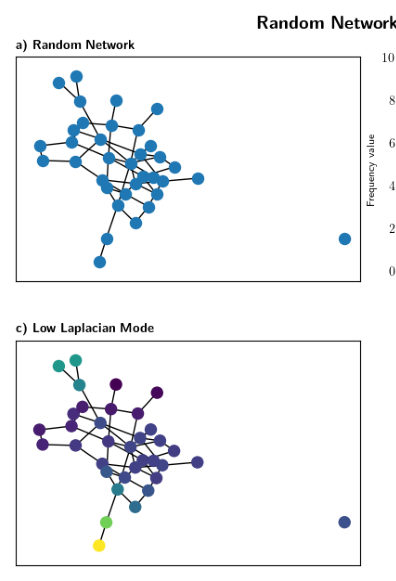
<figcaption class="paper-figure-caption"><b>Fig 1.</b> Fig. 1 Illustration of graph spectral decomposition. (a) Example of a random network. (b) Laplacian spectrum of the network shown in panel (a), with graph frequencies ordered by eigenvalue. (c) First non-trivial Laplacian eigenvector of the same network, representing a low-frequency graph mode associated with large-scale structural organisation. (d) Highest-frequency Laplacian eigenvector of the network, representing fine-scale variation across the graph. Together, panels (b)–(d) illustrate how the network structure shown in panel (a) gives rise to a hierarchy of graph-spectral modes that form the basis of the graph Fourier representation used throughout this work.</figcaption>
</figure>
<figure class="paper-figure-card">
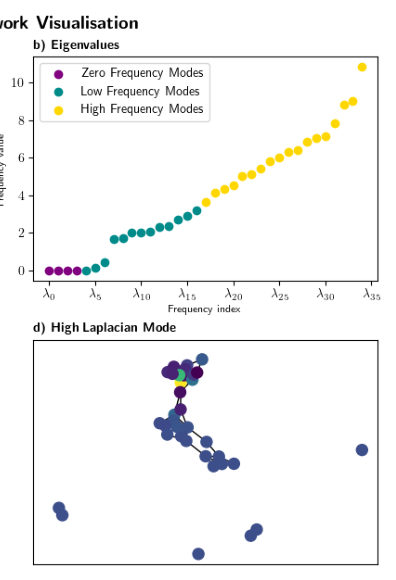
<figcaption class="paper-figure-caption"><b>Fig 2.</b> Fig. 2 Illustration of the modular network architecture used throughout this study. (a) Example of a modular network, with node colours indicating community affiliation. (b) Laplacian spectrum of the network shown in panel (a), with graph frequencies ordered by eigenvalue. (c) First non-zero Laplacian eigenvector of the same network, representing a low-frequency mode associated with large- scale community structure. (d) Highest-frequency Laplacian eigenvector of the network, representing fine-scale variation across the graph. Together, panels (b)–(d) illustrate how the modular structure shown in panel (a) is encoded in the graph-spectral representation used throughout this work.</figcaption>
</figure>
<figure class="paper-figure-card">
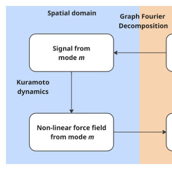
<figcaption class="paper-figure-caption"><b>Fig 3.</b> Fig. 3 Transfer matrix construction schematic display steps described in Section 2.3</figcaption>
</figure>
<figure class="paper-figure-card">
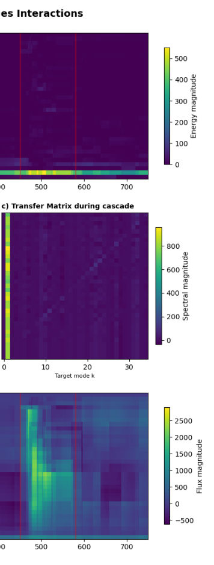
<figcaption class="paper-figure-caption"><b>Fig 4.</b> Fig. 4 Emergence of graph-spectral cascade dynamics. (a) Temporal evolution of the modal energy Em(t), showing persistent low-frequency organisation together with intermittent redistribution across higher graph-spectral modes. Cross-sections of the transfer matrix Tm→k(t) are shown (b) outside a cascade episode and (c) during an active cascade event. Panel (d) shows the corresponding spectral flux Π(t, K0). Red vertical lines in panels (a) and (d) indicate a representative cascade episode.</figcaption>
</figure>
<figure class="paper-figure-card">
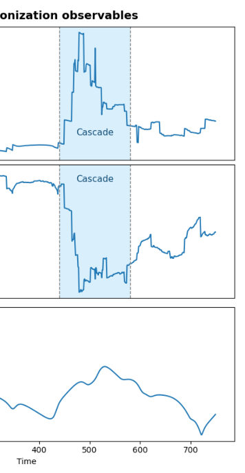
<figcaption class="paper-figure-caption"><b>Fig 5.</b> Fig. 5 Comparison of synchronisation and transfer observables for a representative network realisa- tion. The figure consists of three time-dependent panels: (a) mean spectral flux Π(t) averaged over the spectral cutoff parameter K0, (b) interaction ratio Q(t), and (c) synchronisation order parameter R(t). The figure illustrates the relationship between graph-spectral transfer dynamics and global syn- chronisation. While the synchronisation order parameter remains comparatively smooth, the transfer observables exhibit pronounced fluctuations, intermittent bursts, and rapid reorganisations. These results demonstrate that substantial changes in graph-spectral transfer dynamics may occur even...</figcaption>
</figure>
</div>

<p><strong>Summary.</strong> This paper develops a spectral transfer formalism to analyze nonlinear synchronization in coupled oscillator networks, moving beyond simple global measures. By projecting dynamics onto the graph Laplacian eigenbasis, the authors quantify how activity redistributes across structural scales via a transfer matrix. This reveals hidden, structured spectral reorganizations that persist even when the overall system appears macroscopically stable.</p>
<p><strong>Why it may be interesting.</strong> The concept of spectral reorganisation and the separation of global coherence from underlying spectral dynamics provides a powerful, multiscale diagnostic tool applicable to analyzing complex, non-equilibrium dynamics in many-body systems, which is relevant to open quantum systems.</p>
<details>
<summary>Detailed structure</summary>
<p><strong>Main problem.</strong> The work aims to resolve how internal dynamical activity redistributes across network scales during nonlinear synchronization, moving beyond traditional global observables like the Kuramoto order parameter.</p>
<p><strong>Main result.</strong> The study demonstrates a clear separation between macroscopic coherence and microscopic spectral interactions, showing that structured, fluctuating internal redistribution dynamics persist even when global synchronisation is nearly stationary.</p>
<p><strong>Method.</strong> A spectral transfer formalism is introduced by projecting Kuramoto phase dynamics onto the eigenbasis of the graph Laplacian, constructing a time-dependent transfer matrix.</p>
<p><strong>Model / system.</strong> The model uses the Kuramoto oscillator system coupled on a general graph structure, with analysis focusing on modular and hierarchical network architectures.</p>
<p><strong>Key observables.</strong> Spectral flux, Spectral Modal Energy ($E_m(t)$), Transfer Matrix elements ($T_{m 	o k}(t)$), Net Spectral Flux ($\Pi(t, K_0)$), and the conventional Kuramoto order parameter ($R(t)$).</p>
<p><strong>Important parameters / regimes.</strong> Coupling strength ($K$), frequency heterogeneity ($\sigma_{\omega}$), and the structural scales defined by the graph Laplacian eigenmodes.</p>
<p><strong>Assumptions / limitations.</strong> The spectral flux quantifies redistribution between <em>structural</em> dynamical scales defined by the Laplacian eigenbasis, not physical transport across nodes.</p>
<p><strong>Figures summary.</strong> Figures illustrate graph spectral decomposition (showing mode hierarchies) and the temporal evolution of spectral activity, including cross-sections of the transfer matrix and the spectral flux ($\Pi$).</p>
<p><strong>Paper structure.</strong> The paper builds the spectral transfer formalism by decomposing the state onto graph eigenmodes, constructing the transfer matrix to quantify mode exchange, and analyzing the resulting spectral flux and various transfer observables to characterize different dynamical regimes.</p>
</details>
<details>
<summary>Abstract</summary>
<p>This work introduces a spectral transfer formalism for nonlinear synchronisation dynamics to resolve how internal dynamical activity redistributes across network scales, moving beyond traditional global observables like the Kuramoto order parameter. By projecting Kuramoto phase dynamics onto the eigenbasis of the graph Laplacian, we construct a time-dependent transfer matrix and derive novel network metrics, including the spectral flux, which quantifies directional redistribution between structural dynamical scales rather than physical transport across nodes. Numerical simulations on modular and hierarchical networks reveal highly structured, intermittent spectral transfer episodes characterised by forward and inverse spectral cascades, directional reversals, and complex interaction geometries. Crucially, we demonstrate a clear separation between macroscopic coherence and microscopic spectral interactions, showing that highly organised, fluctuating internal redistribution dynamics persist even beneath nearly stationary and featureless global synchronisation states. This framework extends conventional synchronisation analysis and establishes a multiscale approach for interpreting network dynamics as an evolving process of spectral reorganisation.</p>
</details>
<p><sub><a href="#top">↑ back to top</a></sub></p>

<p><a id="paper-2609.27447"></a></p>
<h3 id="a-75-ml-intrinsically-stable-atom-filtered-laser-enabling-deployable-quantum-devices"><a href="http://arxiv.org/abs/2609.27447v1">A 75-mL intrinsically stable atom-filtered laser enabling deployable quantum devices</a></h3>
<p><strong>Authors:</strong> Zijie Liu, Zheng Xiao, Zhiyang Wang, Xiaolei Guan, Xiaomin Qin, Suyang Wei, Hongtian Song, Baoshuai Wang, Jia Zhang, Xiaopeng Xie, Tiantian Shi, Anhong Dang, Jingbiao Chen<br>
<strong>Type:</strong> experiment · <strong>Category:</strong> other · <strong>PDF:</strong> <a href="https://arxiv.org/pdf/2609.27447v1">https://arxiv.org/pdf/2609.27447v1</a><br>
<strong>Analysis basis:</strong> full PDF text, analyzed in chunks
<strong>Topic relevance:</strong> <code>interference shaping light</code> <strong>1/5</strong> · <code>quantum measurements</code> <strong>1/5</strong> · <code>quantum optics experiment</code> <strong>1/5</strong> · <code>superradiant laser</code> <strong>1/5</strong></p>
<div class="figure-strip-hint">↔ Scroll figures horizontally</div>
<div class="paper-figures-scroll">
<figure class="paper-figure-card">
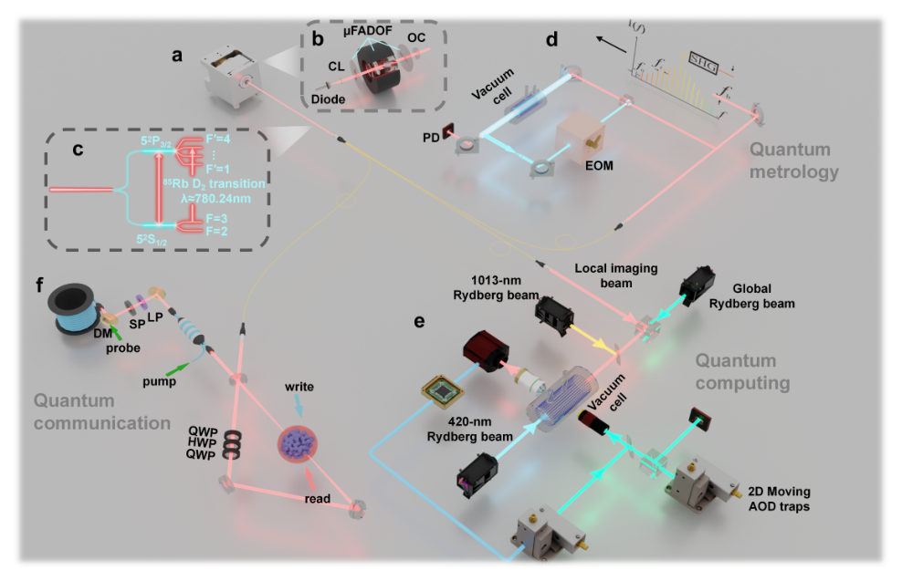
<figcaption class="paper-figure-caption"><b>Fig 1.</b> Fig. 1. 75-mL atom-filtered laser (75-mL AFL) and its applications in deployable quantum devices. a. External struc- ture of the 75-mL AFL. b. Internal structure of the 75-mL AFL, in which a micro 85Rb Faraday anomalous dispersion optical filter (µFADOF) is integrated inside the laser resonator. CL, collimating lens; OC, output coupler. c. The 75-mL AFL output laser is di- rectly tuned to the 85Rb 52S1/2 →52P3/2 transition. d. Quantum metrology application: a compact optical atomic clock based on modulation transfer spectroscopy (MTS) frequency locking, in which the 75-mL AFL serves as the local oscillator laser. A erbium-doped optical frequency comb, which has undergone frequency doubling...</figcaption>
</figure>
<figure class="paper-figure-card">
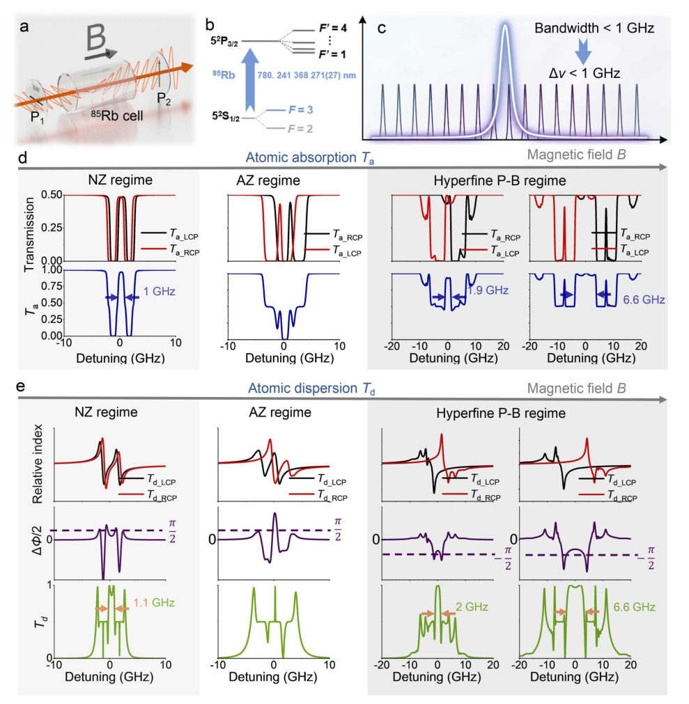
<figcaption class="paper-figure-caption"><b>Fig 2.</b> Fig. 2. Working principle of FADOF frequency selection and flat-top FADOF design. a, Schematic diagram illustrating the frequency selection principle of the FADOF. b, Energy-level diagram of the 85Rb 52S1/2 →52P3/2 transition. c, Frequency selec- tion principle of the AFL. Only the laser resonator modes (blue lines) located within the FADOF transmission spectrum (white line) can oscillate. d, The left-hand circularly polarized (LCP, red curves) and right-hand circularly polarized (RCP, black curves) compo- nents of the atomic absorption term Ta (blue curves) across different magnetic field regimes. e, The LCP (black curves) and RCP (red curves) components of the atomic dispersion term Td...</figcaption>
</figure>
<figure class="paper-figure-card">
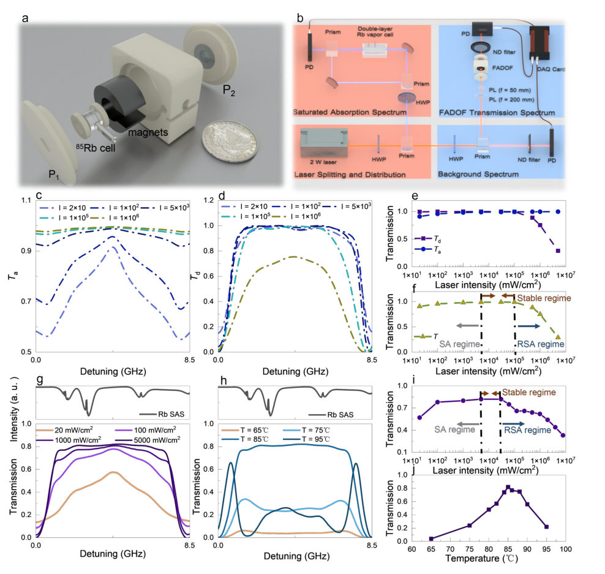
<figcaption class="paper-figure-caption"><b>Fig 3.</b> Fig. 3. µFADOF device, test system, optical feedback characteristics, and temperature characteristics. a, Schematic of the µFADOF device. The cold finger of the atomic vapor cell, the two probes of the temperature control system, and the power supply lines are all positioned within the gap of the C-shaped magnet. Two polarizers, each 0.1 mm thick, are placed in front of and behind the atomic vapor cell, functioning as the polarizer and analyzer for the FADOF. b, The µFADOF transmission spectrum measurement sys- tem, which is divided into four functional sections. Laser splitting and distribution: A small portion (a few mW) of the test laser is uti- lized for saturated absorption...</figcaption>
</figure>
<figure class="paper-figure-card">
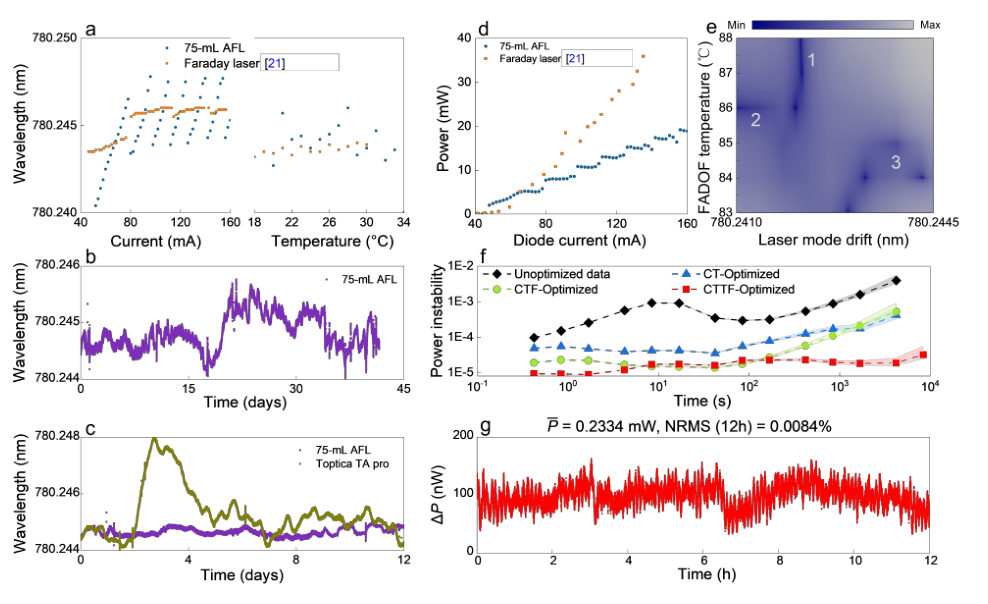
<figcaption class="paper-figure-caption"><b>Fig 4.</b> Fig. 4. Wavelength and power characteristics of the 75-mL AFL. a, Output wavelengths of the 75-mL AFL and previous Faraday lasers [21] under varying diode currents and temperatures. b, Wavelength drift of the 75-mL AFL over a 42-day free-running period. c, Wavelength drift of the 75-mL AFL compared with an established commercial laser (Toptica TA pro) operating simultane- ously in free-running mode for 12 days in the same laboratory environment. d, Output power of the 75-mL AFL and previous Faraday lasers [21] under varying diode currents. e, The rate of power change at different FADOF temperatures and laser wavelengths during the power optimization process (darker colors indicate lower...</figcaption>
</figure>
<figure class="paper-figure-card">
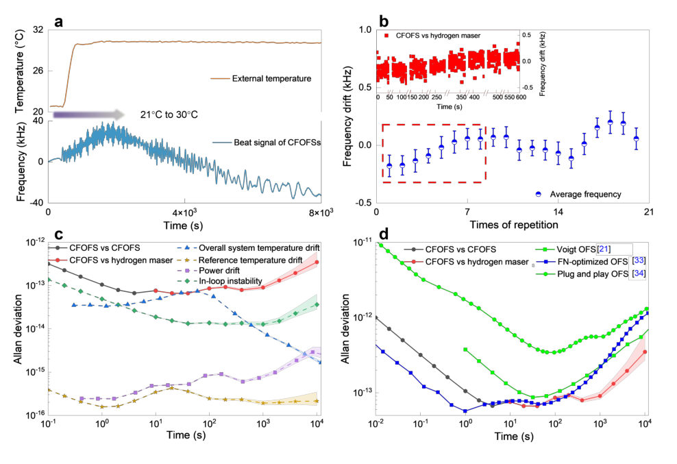
<figcaption class="paper-figure-caption"><b>Fig 5.</b> Fig. 5. Turn-key characteristics and frequency instability of the CFOFS. a, Frequency drift of the beat signal between two CFOFSs when subjected to an ambient temperature shock of +9°C within 6 minutes. b, Laser frequency drift during 20 vibration shock tests. The inset displays the CFOFS frequency output during the first 8 vibration shocks; after each shock, the data is averaged over 1 minute and recorded before the subsequent shock is applied. c, CFOFS frequency instability and the noise contributions from indi- vidual parameters. CFOFS vs CFOFS: Short-term frequency instability evaluated via the beat note between two CFOFSs. CFOFS vs hydrogen maser: long-term frequency instability...</figcaption>
</figure>
</div>

<p><strong>Summary.</strong> This paper presents a novel, miniaturized Atom-Filtered Laser (AFL) using a micro Faraday anomalous dispersion optical filter ($\mu$FADOF). By engineering the filter to achieve a wide, flat-top transmission window, the authors overcome the size limitations of conventional AFLs, resulting in a compact 75 mL device. This device demonstrates excellent stability and turn-key operation, making it highly promising for next-generation quantum technology.</p>
<p><strong>Why it may be interesting.</strong> This work directly addresses the engineering challenges of integrating atomic physics principles into practical, deployable quantum hardware, which is a major focus area for AMO physicists.</p>
<details>
<summary>Detailed structure</summary>
<p><strong>Main problem.</strong> Miniaturizing and stabilizing Atom-Filtered Lasers (AFLs) for quantum devices, which are currently limited by the bulky size and narrow bandwidth of conventional atomic filters.</p>
<p><strong>Main result.</strong> The authors developed a micro Faraday anomalous dispersion optical filter (μFADOF) that achieves a 7.5 GHz flat-top transmission window, enabling a 30-fold volume reduction to a compact 75 mL package while maintaining high frequency stability.</p>
<p><strong>Method.</strong> The research involves designing and characterizing the $\mu$FADOF operating in the extreme hyperfine Paschen-Back regime, optimizing its operation through active temperature and current control to leverage stable optical self-feedback.</p>
<p><strong>Model / system.</strong> The core system is the AFL utilizing the $\mu$FADOF, which is based on the anomalous dispersion properties of alkali atoms (like ${}^{85}	ext{Rb}$). The operation relies on achieving a stable self-feedback regime where the filter's transmission profile is robust against environmental fluctuations.</p>
<p><strong>Key observables.</strong> Power instability ($9 	imes 10^{-6}$ at 1 s), long-term frequency stability ($3 	imes 10^{-13}$ at 10000 s), and the achieved flat-top transmission bandwidth (7.5 GHz).</p>
<p><strong>Important parameters / regimes.</strong> Operating regime (hyperfine Paschen-Back), bandwidth (7.5 GHz), volume reduction (30-fold to 75 mL), and stabilization parameters (temperature/current control).</p>
<p><strong>Assumptions / limitations.</strong> The stability of the laser output is critically dependent on operating the $\mu$FADOF in a specific, stable optical self-feedback regime.</p>
<p><strong>Figures summary.</strong> Figures illustrate the external structure of the 75-mL AFL and its applications; one figure details the working principle of the FADOF using energy-level diagrams for ${}^{85}	ext{Rb}$ to derive the dispersion profile.</p>
<p><strong>Paper structure.</strong> The paper progresses from identifying the miniaturization bottleneck of AFLs to proposing the $\mu$FADOF solution. It details the physics of the filter (operating regimes, intensity dependence) and concludes with experimental results demonstrating high stability and compactness.</p>
</details>
<details>
<summary>Abstract</summary>
<p>Numerous quantum devices require lasers strictly locked to atomic transitions. Atom-filtered lasers (AFLs) are considered a leading candidate for quantum device laser sources due to their ability to self-align to atomic transitions. However, the sub-GHz sharp transmission spectra of conventional atomic filters impose constraints on both laser miniaturization and output stability. Herein, we demonstrate a micro Faraday anomalous dispersion optical filter (μFADOF) operating within the extreme hyperfine Paschen-Back regime, generating a 7.5 GHz flat-top transmission window. By integrating this filter, the miniaturization bottleneck of the AFLs is overcome, achieving a 30-fold volume reduction to a compact package volume of 75 mL. Simultaneously, investigations into the optical self-feedback characteristics of the μFADOF reveal a stable operating regime, where the optical self-feedback of the atomic filter acts as a stabilizing mechanism, enabling the laser to achieve a power instability of 9 x 10^-6 at 1 s and 3.2 x 10^-5 at 8400 s. The optical frequency standard based on this 75-mL AFL achieves a further improvement in long-term frequency stability to 3 x 10^-13 at 10000 s and maintains turn-key operation under environmental shocks, highlighting the critical role of this laser in the development of deployable quantum devices.</p>
</details>
<p><sub><a href="#top">↑ back to top</a></sub></p>

<p><a id="paper-2609.27537"></a></p>
<h3 id="classical-root-systems-reveal-defect-junction-data-in-stabilizer-renyi-entropy"><a href="http://arxiv.org/abs/2609.27537v1">Classical Root Systems Reveal Defect-Junction Data in Stabilizer Renyi Entropy</a></h3>
<p><strong>Authors:</strong> M. A. Rajabpour<br>
<strong>Type:</strong> theory · <strong>Category:</strong> statistical mechanics · <strong>PDF:</strong> <a href="https://arxiv.org/pdf/2609.27537v1">https://arxiv.org/pdf/2609.27537v1</a><br>
<strong>Analysis basis:</strong> full PDF text, analyzed in chunks
<strong>Topic relevance:</strong> <code>Full counting statistics</code> <strong>1/5</strong> · <code>Keldysh / 2PI / non-Gaussian methods</code> <strong>1/5</strong> · <code>analog quantum simulation</code> <strong>1/5</strong> · <code>quantum measurements</code> <strong>1/5</strong></p>
<div class="figure-strip-hint">↔ Scroll figures horizontally</div>
<div class="paper-figures-scroll">
<figure class="paper-figure-card">
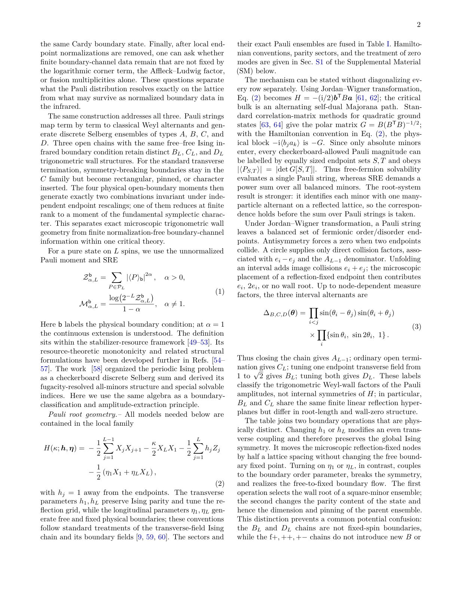
<figcaption class="paper-figure-caption"><b>Fig 1.</b> Low-resolution page preview, page 2</figcaption>
</figure>
<figure class="paper-figure-card">
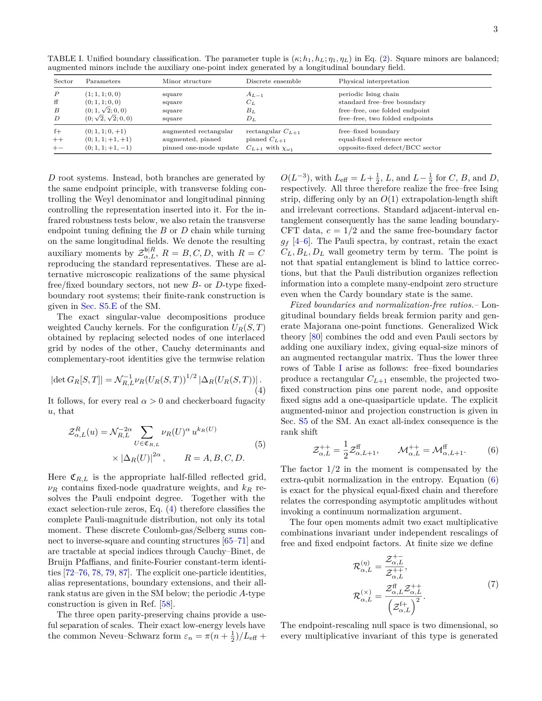
<figcaption class="paper-figure-caption"><b>Fig 2.</b> Low-resolution page preview, page 3</figcaption>
</figure>
<figure class="paper-figure-card">
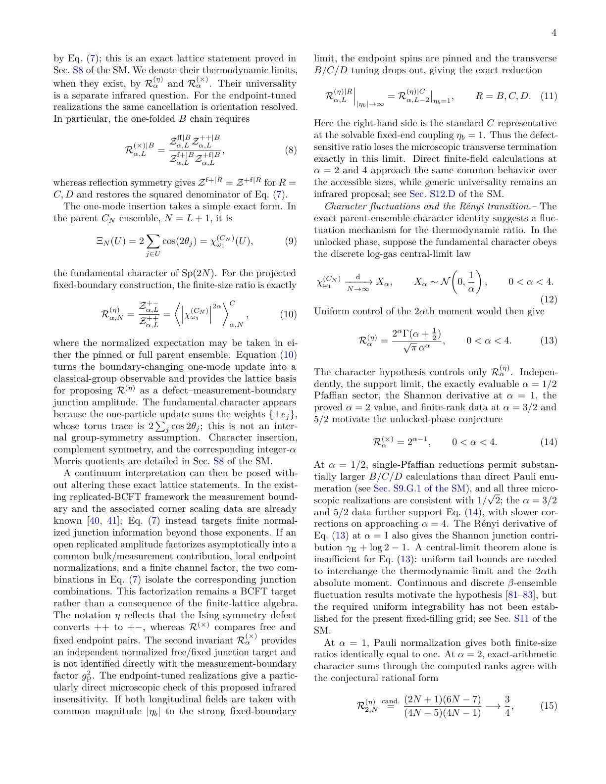
<figcaption class="paper-figure-caption"><b>Fig 3.</b> Low-resolution page preview, page 4</figcaption>
</figure>
<figure class="paper-figure-card">
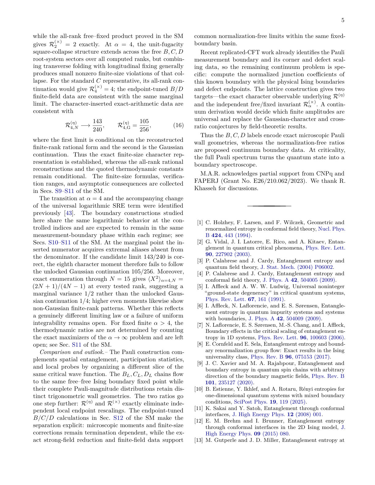
<figcaption class="paper-figure-caption"><b>Fig 4.</b> Low-resolution page preview, page 5</figcaption>
</figure>
<figure class="paper-figure-card">
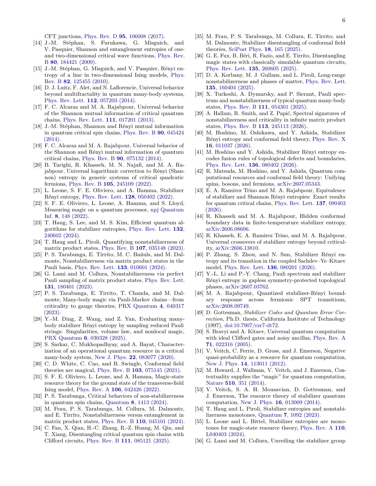
<figcaption class="paper-figure-caption"><b>Fig 5.</b> Low-resolution page preview, page 6</figcaption>
</figure>
</div>

<p><strong>Summary.</strong> This theoretical paper analyzes the boundary information encoded in the full Pauli spectrum of critical quantum chains, showing it goes beyond what is captured by standard Rényi entropy measures. By mapping the system to classical root systems, the authors derive exact lattice invariants that serve as precise targets for understanding defect-junction amplitudes in boundary conformal field theory. The results confirm that the full spectrum retains crucial boundary details lost in the continuum limit.</p>
<p><strong>Why it may be interesting.</strong> The work provides a deep, mathematically rigorous link between critical quantum systems, boundary conformal field theory, and algebraic structures (root systems), which is highly relevant for understanding boundary effects in quantum many-body systems.</p>
<details>
<summary>Detailed structure</summary>
<p><strong>Main problem.</strong> The paper investigates what boundary information is retained in the full Pauli distribution of critical quantum states, which may be invisible when only considering single Rényi entropy moments or the infrared fixed point.</p>
<p><strong>Main result.</strong> The full Pauli spectrum resolves boundary information by generating specific multiplicative invariants related to classical root systems (A, B, C, D), providing concrete lattice targets for defect-measurement-boundary junction amplitudes.</p>
<p><strong>Method.</strong> The analysis uses advanced techniques involving Selberg ensembles, Cauchy determinants, and the comparison of ratios of partition functions derived from different boundary conditions.</p>
<p><strong>Model / system.</strong> The study focuses on critical Ising chains, whose properties are analyzed using Pauli strings and mapped onto structures governed by classical root systems A, B, C, and D.</p>
<p><strong>Key observables.</strong> Stabilizer Rényi Entropy moments, Pauli magnitudes, and ratios of moments $R(\eta)_{\alpha,L}$ and $R(	imes)_{\alpha,L}$.</p>
<p><strong>Important parameters / regimes.</strong> The Renyi index $\alpha$, the system length $L$, and boundary field parameters $\eta_b$ are crucial parameters explored across various limits.</p>
<p><strong>Assumptions / limitations.</strong> The analysis assumes that the lattice ratios converge to universal continuum junction targets in the thermodynamic limit, despite microscopic differences between boundary realizations.</p>
<p><strong>Figures summary.</strong> Figures compare the convergence of ratios for different root system realizations (B, C, D) towards common theoretical limits, and show the flow of observables away from exactly solvable points.</p>
<p><strong>Paper structure.</strong> The paper progresses by first establishing the connection between Pauli distributions and root systems, deriving exact lattice invariants, and then performing detailed finite-size and strong-boundary limit analyses to confirm the universality of the derived junction amplitudes.</p>
</details>
<details>
<summary>Abstract</summary>
<p>Universal information extracted from a critical quantum state depends on how the state is probed. Spatial entanglement, participation statistics, and stabilizer Rényi entropy correspond to different replica geometries and need not isolate the same boundary data. We show that the complete distribution of Pauli magnitudes in critical Ising chains carries an exact geometric fingerprint of boundary termination, distinguishing lattice realizations that flow to the same infrared boundary fixed point. This structure is organized by discrete Selberg ensembles associated with the classical root systems $A$, $B$, $C$, and $D$: three open chains sharing the free--free Ising boundary condition retain distinct $B_L$, $C_L$, and $D_L$ trigonometric wall geometries. The standard symmetry-breaking representatives instead produce rectangular, pinned, and character-inserted $C$ ensembles. Their four boundary moments contain exactly two independent multiplicative combinations invariant under local endpoint normalizations. One of these reduces exactly at finite rank to a moment of the fundamental symplectic character and provides a lattice target for a defect--measurement-boundary junction amplitude. A conditional Gaussian-character law predicts its values throughout the unlocked phase, while exact-arithmetic finite-rank results at the $α=4$ transition depart sharply from the Gaussian continuation. These results show that the full Pauli spectrum resolves boundary information invisible to the infrared boundary fixed point alone and provide concrete targets for replicated boundary conformal field theory.</p>
</details>
<p><sub><a href="#top">↑ back to top</a></sub></p>

<p><a id="paper-2609.28326"></a></p>
<h3 id="bridging-two-families-of-non-hermiticity-from-non-reciprocal-couplings-to-an-imaginary-potential-using-the-lanczos-transformation"><a href="http://arxiv.org/abs/2609.28326v1">Bridging two families of non-Hermiticity: from non-reciprocal couplings to an imaginary potential using the Lanczos transformation</a></h3>
<p><strong>Authors:</strong> Li Ge<br>
<strong>Type:</strong> theory · <strong>Category:</strong> other · <strong>PDF:</strong> <a href="https://arxiv.org/pdf/2609.28326v1">https://arxiv.org/pdf/2609.28326v1</a><br>
<strong>Analysis basis:</strong> full PDF text, analyzed in chunks
<strong>Topic relevance:</strong> <code>analog quantum simulation</code> <strong>1/5</strong> · <code>correlated / nonlocal dissipation</code> <strong>1/5</strong> · <code>driven-dissipative phase transition</code> <strong>1/5</strong></p>
<div class="figure-strip-hint">↔ Scroll figures horizontally</div>
<div class="paper-figures-scroll">
<figure class="paper-figure-card">
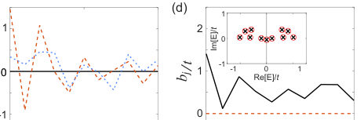
<figcaption class="paper-figure-caption"><b>Fig 1.</b> FIG. 1. Non-Hermitian symmetric tight-binding Hamil- tonian isospectral to the Hatano-Nelson model. (a,b) Real (solid) and imaginary (dashed) parts of the on-site po- tential aj and symmetric couplings bj with |u0), (v0| given by Eq. (11) and g = 0.6. Inset in (b): Identical energy spectrum of H (red circles) and HL (black crosses). (c,d) Same as (a,b) but with imaginary Vj randomly chosen in [−it/2, it/2] [dotted line in (c)].</figcaption>
</figure>
<figure class="paper-figure-card">
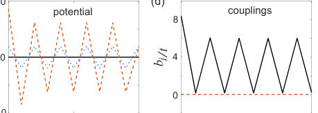
<figcaption class="paper-figure-caption"><b>Fig 2.</b> FIG. 2. Bi-Lanczos transformation with EPs. (a,b) Identical energy spectrum of H (red circles) and HL (black crosses) with q = 5 and 1 in Eq. (15), respectively. (c,d) Real (solid) and imaginary (dashed) parts of the on-site potential aj and symmetric couplings bj in (b) using Eq. (11) and g = 1. The origin imaginary potential Vj = ±iγ = ±i1.9319t at this EP [dotted line in (c)].</figcaption>
</figure>
<figure class="paper-figure-card">
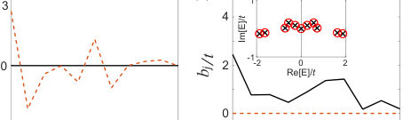
<figcaption class="paper-figure-caption"><b>Fig 3.</b> FIG. 5. A two-dimensional example. (a) Schematic of the triangular ribbon. Asymmetric real and imaginary couplings are shown as solid and dashed lines, respectively. (b,c) Real (solid) and imaginary (dashed) parts of the on-site potential aj and symmetric couplings bj with |u0), (v0| given by Eq. (11) and g = 1. Inset in (c): Identical energy spectrum of H (red circles) and HL (black crosses).</figcaption>
</figure>
<figure class="paper-figure-card">
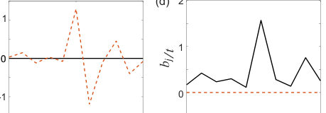
<figcaption class="paper-figure-caption"><b>Fig 4.</b> FIG. 4. Regulating all symmetric couplings to be real after the bi-Lanczos transformation. (a,b) Real (solid) and imaginary (dashed) parts of the on-site potential aj and symmetric couplings bj with |u0), (v0| given by Eq. (11) and g = 1. Vj = 0 and all random couplings are in [0, t] in H. (c,d) Same as (a,b) for the same H but with g = 0.1.</figcaption>
</figure>
</div>

<p><strong>Summary.</strong> This paper introduces a novel mathematical technique using the Lanczos transformation to bridge two distinct physical descriptions of non-Hermiticity: non-reciprocal couplings and imaginary potentials. It demonstrates that a generalized Hatano-Nelson model can be mapped to an equivalent model with real couplings and an imaginary on-site potential. This provides a versatile framework for designing and understanding complex non-Hermitian quantum systems.</p>
<p><strong>Why it may be interesting.</strong> This work provides a powerful mathematical tool (the Lanczos mapping) to unify the understanding of different non-Hermitian physics phenomena, which is highly relevant for designing and analyzing open quantum systems in optics and condensed matter.</p>
<details>
<summary>Detailed structure</summary>
<p><strong>Main problem.</strong> The paper aims to establish an isospectral mapping between two distinct families of non-Hermiticity: those arising from non-reciprocal couplings and those involving an imaginary on-site potential.</p>
<p><strong>Main result.</strong> The Lanczos transformation, when applied with specific initial vectors, successfully maps a generalized Hatano-Nelson model to an equivalent tight-binding model featuring real symmetric couplings and an imaginary on-site potential.</p>
<p><strong>Method.</strong> The core method is the bi-Lanczos transformation, adapted for non-symmetric Hamiltonians, which constructs an isospectral mapping between the two non-Hermitian forms.</p>
<p><strong>Model / system.</strong> The study focuses on 1D and 2D tight-binding lattice models, specifically generalizing the Hatano-Nelson model, which incorporates non-reciprocal couplings and potentially imaginary on-site potentials.</p>
<p><strong>Key observables.</strong> The primary observables are the couplings (real vs. imaginary) and the resulting energy spectrum, which is shown to be isospectral between the original and transformed Hamiltonians.</p>
<p><strong>Important parameters / regimes.</strong> The initial vectors $|u_0
angle$ and $\langle v_0|$ are crucial parameters, as their specific choice dictates whether the resulting model has an imaginary potential or real couplings.</p>
<p><strong>Assumptions / limitations.</strong> The success of the mapping relies on choosing non-standard initial vectors for the bi-Lanczos transformation, and the method is shown to hold even when the original Hamiltonian already contains imaginary potentials or exceptional points.</p>
<p><strong>Figures summary.</strong> Figures illustrate the transformation on a 1D lattice, showing how different choices of initial vectors control the real/imaginary nature of the on-site potential and couplings. Further figures demonstrate the mapping in 2D (triangular ribbon) and the behavior of exceptional points.</p>
<p><strong>Paper structure.</strong> The paper introduces the two non-Hermitian families, develops the Lanczos mapping technique using specific initial vectors, proves the isospectrality, and then applies this framework to construct novel non-Hermitian systems with desired spectral properties (e.g., real spectrum without PT symmetry).</p>
</details>
<details>
<summary>Abstract</summary>
<p>Two types of non-Hermiticity found in physical systems, i.e., non-reciprocal couplings and complex potentials, have gained considerable interest recently. The former leads to the non-Hermitian skin effect, while the latter gives rise to a range of non-Hermitian symmetries such as parity-time ($PT$) and particle-hole symmetries. Although these two non-Hermitian forms have been incorporated in the same models, so far they have been treated as distinct families of non-Hermiticity. In this work, we establish an isospectral mapping between them using the Lanczos transformation. More specifically, we show that a generalized Hatano-Nelson model $H$ with non-reciprocal and spatially varying couplings can be mapped to a tight-binding model $H_L$ with real symmetric couplings and an imaginary on-site potential. This result holds even when the original $H$ already has an imaginary potential and exceptional points. Our work provides a refreshed understanding of the connection between different forms of non-Hermiticity. It also offers an approach to obtaining an intuitive physical understanding of exceptional points in $H_L$ that are elusive in $H$. Finally, our findings also warrant a versatile approach to constructing non-Hermitian systems with a complex potential and a real spectrum, without $PT$ symmetry.</p>
</details>
<p><sub><a href="#top">↑ back to top</a></sub></p>

<p><a id="paper-2609.27425"></a></p>
<h3 id="uphill-and-downhill-first-passage-of-an-active-brownian-particle-asymmetry-and-exact-path-reweighting"><a href="http://arxiv.org/abs/2609.27425v1">Uphill and downhill first passage of an active Brownian particle: Asymmetry and exact path reweighting</a></h3>
<p><strong>Authors:</strong> Mykola Tasinkevych, Xuan My Le, Artem Ryabov<br>
<strong>Type:</strong> theory · <strong>Category:</strong> statistical mechanics · <strong>PDF:</strong> <a href="https://arxiv.org/pdf/2609.27425v1">https://arxiv.org/pdf/2609.27425v1</a><br>
<strong>Analysis basis:</strong> full PDF text, analyzed in chunks
<strong>Topic relevance:</strong> <code>Frenkel-Kontorova</code> <strong>1/5</strong> · <code>Keldysh / 2PI / non-Gaussian methods</code> <strong>1/5</strong> · <code>non-equilibrium universality</code> <strong>1/5</strong></p>
<div class="figure-strip-hint">↔ Scroll figures horizontally</div>
<div class="paper-figures-scroll">
<figure class="paper-figure-card">
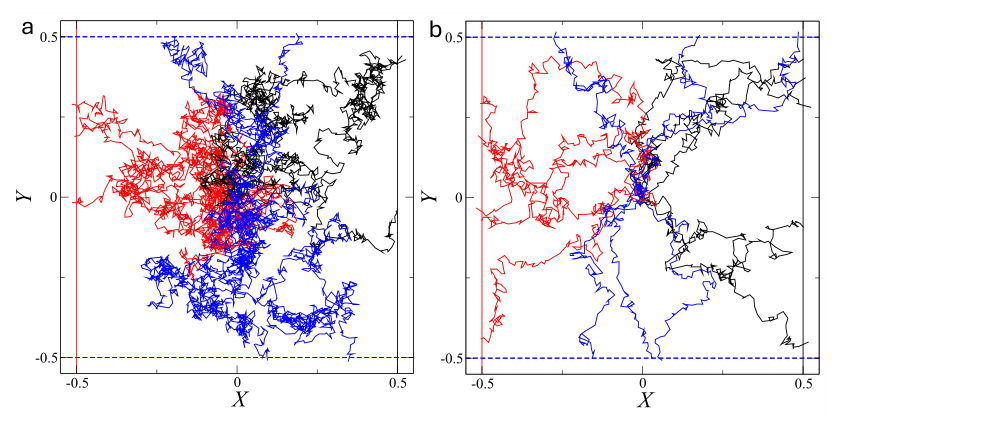
<figcaption class="paper-figure-caption"><b>Fig 1.</b> FIG. 1. Representative planar trajectories (X(τ), Y (τ)) of an active Brownian particle subject to a constant bias directed along +x. Downhill trajectories reaching the absorbing boundary at X = +1/2 are shown in black, uphill trajectories reaching X = −1/2 in red, and selected trajectories with large transverse excursions in blue. No absorbing boundary is imposed in the transverse direction. Panels (a) and (b) correspond to the dimensionless self-propulsion speeds U = 0.21 and U = 1.05, respectively, at fixed dimensionless bias F = 9.66. The planar trajectories are shown for illustration; all quantitative first passage calculations use the closed process (X, ϕ).</figcaption>
</figure>
<figure class="paper-figure-card">
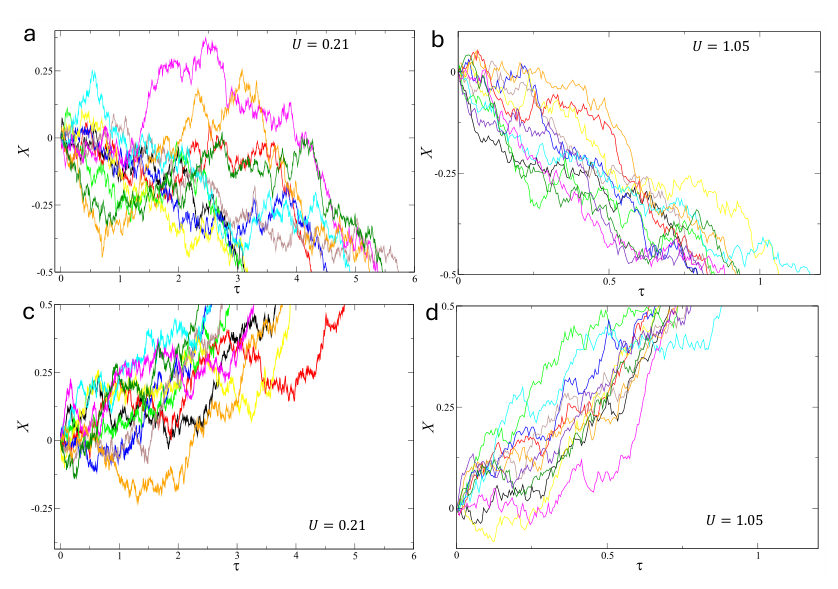
<figcaption class="paper-figure-caption"><b>Fig 2.</b> FIG. 2. Representative projected trajectories X(τ) generated from the closed process (X, ϕ) for an active Brownian particle undergoing first passage between the absorbing boundaries X = ±1/2 in the presence of a constant bias directed along +x. Panels (a,b) show uphill trajectories terminating at X = −1/2, while panels (c,d) show downhill trajectories terminating at X = +1/2. The two columns correspond to the dimensionless self-propulsion parameters U = 0.21 [panels (a,c)] and U = 1.05 [panels (b,d)], at fixed dimensionless bias F = 9.66. Increasing persistence makes the projected motion more correlated and accentuates the contrast between uphill and downhill passages.</figcaption>
</figure>
<figure class="paper-figure-card">
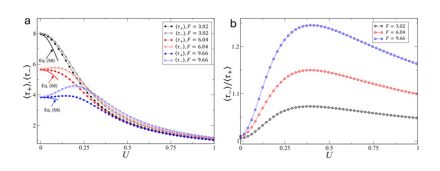
<figcaption class="paper-figure-caption"><b>Fig 3.</b> FIG. 3. (a) Mean first passage times for downhill and uphill crossings, ⟨τ+⟩and ⟨τ−⟩, plotted as functions of the persistence parameter U for several values of the dimensionless bias F, at fixed eD = 0.013. The solid curves show the effective drift-diffusion prediction of Eq. (56), whose small U expansion reproduces the common leading O(U 2) asymptotic contribution derived in Sec. IV A. The boundary-sensitive remainder Rσ is not included in these curves; any directional separation at O(U 2) is contained in the difference R−−R+. Panel (b) shows that the ratio ⟨τ−⟩/⟨τ+⟩depends non-monotonically on the persistence parameter. For the values of F shown, its maximum increases and shifts to larger...</figcaption>
</figure>
<figure class="paper-figure-card">
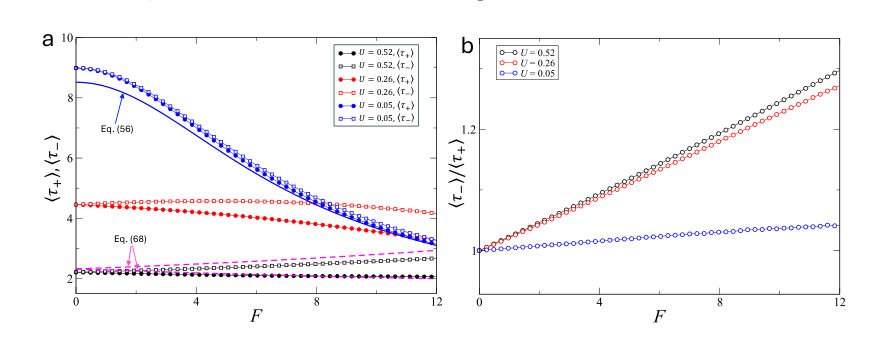
<figcaption class="paper-figure-caption"><b>Fig 4.</b> FIG. 4. (a) Mean first passage times for downhill and uphill crossings, ⟨τ+⟩and ⟨τ−⟩, shown as functions of the dimensionless bias F for several values of the persistence parameter U, at fixed eD = 0.013. The solid curve labelled Eq. (56) shows the effective drift-diffusion results. For U = 0.52, the dashed magenta curves show the frozen-orientation prediction in Eq. (68), where the upper and lower curves represent ⟨τ−⟩and ⟨τ+⟩, respectively. (b) Corresponding ratio ⟨τ−⟩/⟨τ+⟩as a function of F. The figure shows that increasing the external bias increases the difference between the downhill and uphill mean first passage times, with a more pronounced separation at larger U.</figcaption>
</figure>
<figure class="paper-figure-card">
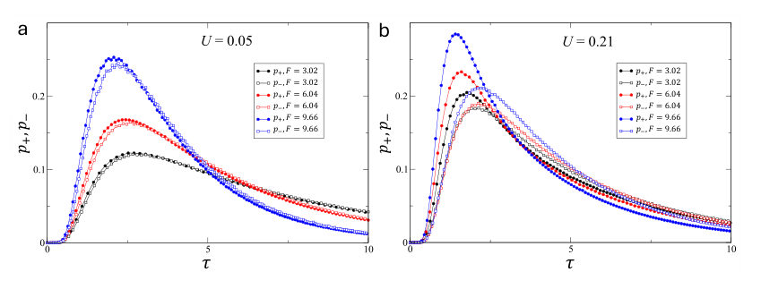
<figcaption class="paper-figure-caption"><b>Fig 5.</b> FIG. 5. Conditional first passage time probability densities for downhill (filled symbols) and uphill (open symbols) passages, shown for (a) U = 0.05 and (b) U = 0.21. Different curves correspond to different values of the dimensionless bias F, at fixed eD = 0.013. The comparison illustrates how increasing persistence enhances the asymmetry between uphill and downhill first passage time distributions, shifting the downhill peak to shorter times and broadening the uphill tail.</figcaption>
</figure>
</div>

<p><strong>Summary.</strong> This work analyzes how self-propulsion introduces asymmetry in the passage times of an active particle moving against or with an external bias. The core finding is that the path ensembles are related by a spatial reflection symmetry, which yields an exact reweighting functional. This functional allows researchers to calculate rare event statistics (uphill) using more common measurements (downhill).</p>
<p><strong>Why it may be interesting.</strong> The concept of exact path reweighting based on symmetry is a powerful tool applicable to non-equilibrium statistical mechanics problems, suggesting general protocols for analyzing directional biases in active matter.</p>
<details>
<summary>Detailed structure</summary>
<p><strong>Main problem.</strong> The paper investigates the asymmetry in first passage processes (uphill vs. downhill) for an Active Brownian Particle (ABP) driven by an external force between absorbing boundaries.</p>
<p><strong>Main result.</strong> While self-propulsion breaks the equality of unweighted first passage time distributions, the two directional path ensembles remain exactly related by spatial reflection, allowing for an exact reweighting to reconstruct rare uphill statistics from common downhill trajectories.</p>
<p><strong>Method.</strong> The analysis employs path-weighting techniques, deriving an exact reweighting functional based on spatial reflection symmetry, and uses perturbative/asymptotic expansions to calculate mean first passage times.</p>
<p><strong>Model / system.</strong> The system is an Active Brownian Particle (ABP) moving in 2D under a constant external force, whose dynamics are reduced to a 1D stochastic process $(x(t), \phi(t))$ in the overdamped limit.</p>
<p><strong>Key observables.</strong> Splitting probabilities, conditional first passage time distributions, and the path-dependent asymmetry functional.</p>
<p><strong>Important parameters / regimes.</strong> Self-propulsion speed ($U$), external force bias ($F$), and rotational diffusion coefficient ($D_r$).</p>
<p><strong>Assumptions / limitations.</strong> The analysis is performed in the overdamped regime, and later sections analyze the rapid angular relaxation limit ($\epsilon 	o 0$).</p>
<p><strong>Figures summary.</strong> Figures illustrate planar trajectories showing both uphill and downhill paths, and projected $X(	au)$ trajectories demonstrating the effect of persistence ($U$) on directional contrast.</p>
<p><strong>Paper structure.</strong> The paper introduces the ABP model, derives the exact path-reweighting relation based on spatial reflection, and then uses this relation to calculate the directional first passage time distributions and mean times via expansions.</p>
</details>
<details>
<summary>Abstract</summary>
<p>First passage processes in active systems combine stochastic transport with self-propulsion and orientational persistence, making motion along and against an external bias sensitive to the internal active dynamics. For passive biased diffusion, opposite exits can have different splitting probabilities while their conditional first passage time distributions remain identical. We study how this relation changes for an active Brownian particle driven by a constant external force between two absorbing boundaries. Self-propulsion breaks the equality of the uphill and downhill first passage time distributions and modifies the splitting probabilities. Nevertheless, the two directional path ensembles remain exactly related by spatial reflection, which pairs downhill and uphill first passage paths of the same duration while preserving their orientational history. The log-ratio of the probabilities of a path and its reflected partner defines a path-dependent asymmetry functional and provides an exact reweighting between the two ensembles. In the symmetric half-weighted representation, the uphill and downhill first passage time distributions coincide for arbitrary orientational persistence. The same path relation also allows rare uphill statistics to be reconstructed from the more frequently sampled downhill trajectories. Numerical simulations confirm the weighted equality across the explored bias and persistence regimes, while perturbative and asymptotic analyses clarify how orientational persistence produces the directional asymmetry of the unweighted statistics. The exact relation between the two directional path ensembles suggests that similar symmetry-based reconstruction protocols may be found in other nonequilibrium first-passage problems.</p>
</details>
<p><sub><a href="#top">↑ back to top</a></sub></p>

<p><a id="paper-2609.28302"></a></p>
<h3 id="improved-convergence-radius-of-the-fer-expansion-for-hermitian-generators"><a href="http://arxiv.org/abs/2609.28302v1">Improved convergence radius of the Fer expansion for Hermitian generators</a></h3>
<p><strong>Authors:</strong> Lorenzo Bagnasacco, Vittorio Giovannetti<br>
<strong>Type:</strong> theory · <strong>Category:</strong> other · <strong>PDF:</strong> <a href="https://arxiv.org/pdf/2609.28302v1">https://arxiv.org/pdf/2609.28302v1</a><br>
<strong>Analysis basis:</strong> full PDF text, analyzed in chunks
<strong>Topic relevance:</strong> <code>Keldysh / 2PI / non-Gaussian methods</code> <strong>1/5</strong> · <code>analog quantum simulation</code> <strong>1/5</strong></p>
<div class="figure-strip-hint">↔ Scroll figures horizontally</div>
<div class="paper-figures-scroll">
<figure class="paper-figure-card">
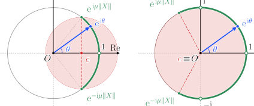
<figcaption class="paper-figure-caption"><b>Fig 1.</b> Figure 1. The spectrum of e−µX for anti-Hermitian X. The eigenvalues eiθ (blue) lie on the arc |θ| ≤µ∥X∥of the unit circle (green). The pink disc is the smallest disc centered at c containing that arc; its radius, drawn as the red dashed segments from c to the end points of the arc, is the quantity minimized over c in Eq. (14). (a) For µ∥X∥&lt; π/2 the op- timal center is c = cos(µ∥X∥), where the chord through the end points meets the real axis, and the radius is sin(µ∥X∥), half that chord. (b) For µ∥X∥&gt; π/2 the arc contains the antipodal points ±i, so no disc of radius smaller than 1 can contain it: the optimal center is the origin, c ≡O, and the radius is 1.</figcaption>
</figure>
<figure class="paper-figure-card">
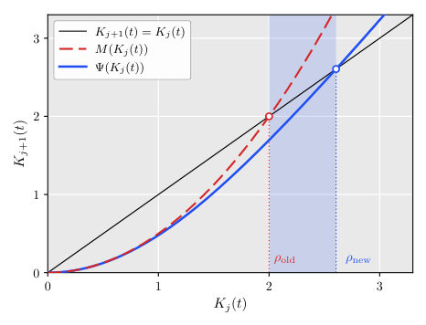
<figcaption class="paper-figure-caption"><b>Fig 2.</b> Figure 2. The recursion (24) seen as a map Kj(t) 7→Kj+1(t): the finite-angle map Ψ of Eq. (23) (blue, solid) and the map M of Eq. (32) (red, dashed), which underlies the radius 2 of Ref. [14], together with the diagonal (thin, solid). The sufficient convergence radius is the positive fixed point, where the graph crosses the diagonal (circles): ρold = 2 for M and ρnew ≈2.6058 for Ψ, Eq. (27). Since Ψ &lt; M, the crossing moves to the right: the shaded interval is the set of initial values K1(t) covered by the new bound but not the old one. Near the origin the two maps agree to leading order, so the rate of convergence is unaffected.</figcaption>
</figure>
</div>

<p><strong>Summary.</strong> This paper enhances the mathematical tool known as the Fer expansion, which calculates quantum time evolution operators using a product of unitary matrix exponentials. By optimizing the bounding technique for commutators, the authors increase the guaranteed convergence radius from 2 to approximately 2.6058. This improvement is vital for accurately simulating quantum dynamics governed by time-dependent Hamiltonians.</p>
<p><strong>Why it may be interesting.</strong> The work provides a significant quantitative improvement to a fundamental mathematical tool (the Fer expansion) used for time evolution in quantum mechanics, which is crucial for simulating dynamics in AMO physics and quantum information.</p>
<details>
<summary>Detailed structure</summary>
<p><strong>Main problem.</strong> The paper aims to improve the convergence radius for the Fer expansion, a method used to calculate the time-evolution operator for quantum systems governed by time-dependent Hamiltonians.</p>
<p><strong>Main result.</strong> The authors successfully improve the known convergence radius for Hermitian generators from $2$ to approximately $2.6058$, representing an improvement of about $30\%$.</p>
<p><strong>Method.</strong> The improvement is achieved by optimizing the bound on the commutator $\left[e^{-\mu X}, Y
ight]$ over a free parameter $c$, which is then used to refine the recursive bound governing the expansion's convergence.</p>
<p><strong>Model / system.</strong> The analysis concerns a quantum system described by a time-dependent Hamiltonian $H(t)$, whose time evolution is captured by the operator $U(t)$. The mathematical framework involves comparing the Dyson series with the unitary-preserving Fer expansion.</p>
<p><strong>Key observables.</strong> The convergence radius, defined by the maximum value of the time integral $\int_0^t \|H(s)\| ds$ for which the expansion is guaranteed to converge.</p>
<p><strong>Important parameters / regimes.</strong> The convergence radius $
ho$, which is determined by the fixed point of the recursion map $\Psi(x)$, and the Hamiltonian $H(t)$ itself.</p>
<p><strong>Assumptions / limitations.</strong> The convergence is only guaranteed within a finite radius, and the derivation relies on bounding the commutator using spectral properties of $e^{-\mu X}$ on the unit circle.</p>
<p><strong>Figures summary.</strong> Figure 1 illustrates the spectrum of $e^{-\mu X}$ for anti-Hermitian $X$ lying on an arc of the unit circle. Figure 2 depicts the recursion relation as a map showing the improvement from the old bound ($
ho_{old}$) to the new bound ($
ho_{new}$).</p>
<p><strong>Paper structure.</strong> The paper builds upon the known Fer expansion, derives a refined bound for the commutator using optimization over a scalar multiple of the identity, and propagates this improved bound through the recursive relation to determine the new, larger convergence radius.</p>
</details>
<details>
<summary>Abstract</summary>
<p>The Dyson series expands the propagator of a time-dependent Hamiltonian in powers of the Hamiltonian, but its truncations are in general not unitary. The Fer expansion writes the same propagator as an infinite product of matrix exponentials, each of them unitary, and its remainder decays doubly exponentially with the number of factors. Convergence, however, is guaranteed only within a finite radius: the time integral of the norm of the Hamiltonian must be smaller than $2$. This is the best value known to date. Here we improve it by about $30\%$, raising it to about $2.6058$.</p>
</details>
<p><sub><a href="#top">↑ back to top</a></sub></p>

<p><a id="paper-2609.28213"></a></p>
<h3 id="local-time-reversal-invariant-topological-markers-in-two-dimensions"><a href="http://arxiv.org/abs/2609.28213v1">Local time-reversal-invariant topological markers in two dimensions</a></h3>
<p><strong>Authors:</strong> Thomas Klein Kvorning, Miguel F. Martínez, Julia D. Hannukainen<br>
<strong>Type:</strong> theory · <strong>Category:</strong> disordered systems and neural networks · <strong>PDF:</strong> <a href="https://arxiv.org/pdf/2609.28213v1">https://arxiv.org/pdf/2609.28213v1</a><br>
<strong>Analysis basis:</strong> full PDF text, analyzed in chunks
<strong>Topic relevance:</strong> <code>analog quantum simulation</code> <strong>1/5</strong> · <code>quantum measurements</code> <strong>1/5</strong></p>
<div class="figure-strip-hint">↔ Scroll figures horizontally</div>
<div class="paper-figures-scroll">
<figure class="paper-figure-card">
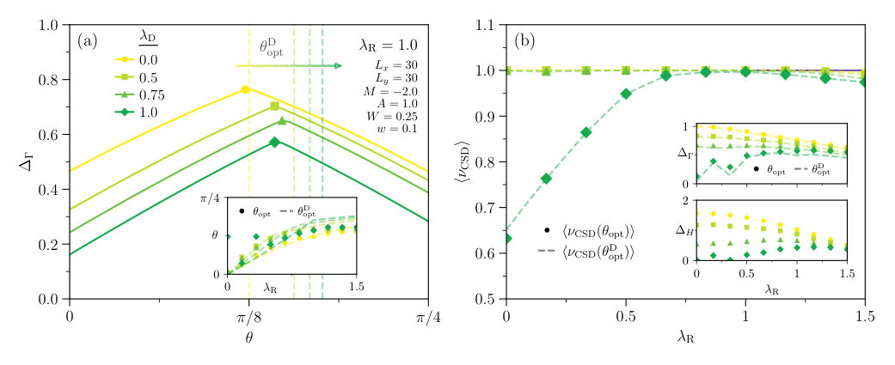
<figcaption class="paper-figure-caption"><b>Fig 1.</b> FIG. 1. (a) Spectral gap of the operator Γ, Eq. (31), as a function of the angle θ. Γ is constructed from the one-parameter family S(θ), Eq. (55), and the one-particle density matrix of the ground state of the Hamiltonian in Eq. (38), with internal hopping matrix given by Eq. (69) and defined in an amorphous arrangement with w = 0.1 constructed from a parent square lattice with linear system sizes Lx = Ly = 30 and periodic boundary conditions. Aside from amorphicity, we use onsite disorder of strength W = 0.25, and set the parameters M = −2, A = 1. The different solid lines denote different values of the Dresselhaus spin-orbit coupling, while the Rashba contribution is fixed to λ = 1. The...</figcaption>
</figure>
<figure class="paper-figure-card">
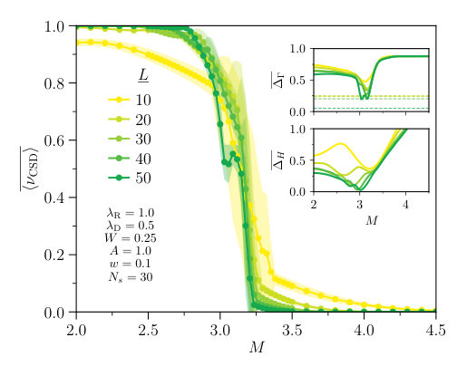
<figcaption class="paper-figure-caption"><b>Fig 2.</b> FIG. 2. Bulk- and sample-averaged CS-descendant marker as a function of the onsite potential M and for linear sys- tem sizes: L = 10, 20, 30, 40, 50. The marker is calculated for the ground state of the Hamiltonian in Eq. (38), with in- ternal hopping matrix given by Eq. (69) and defined in an amorphous arrangement with w = 0.1 constructed from a parent square lattice with periodic boundary conditions. We consider onsite disorder of strength W = 0.25, and set the parameters A = 1, λR = 1, λD = 0.5. At each data point we average the marker over the whole arrangement of sites and over Ns = 30 samples of the amorphous and disordered arrangement. The shaded contours show the standard devi-...</figcaption>
</figure>
</div>

<p><strong>Summary.</strong> This work introduces the Chern-Simons descendant marker, a novel, local, and state-based tool to characterize the $\mathbb{Z}_2$ topological invariant in 2D time-reversal-invariant systems. It achieves this by deriving the marker from the one-particle density matrix and systematically optimizing an auxiliary operator $S$ to ensure the marker remains well-defined even in the presence of disorder. This provides a powerful, practical diagnostic tool for condensed matter physics.</p>
<p><strong>Why it may be interesting.</strong> The development of a local, measurable marker for topological invariants in disordered systems is crucial for understanding real-world materials where perfect crystalline order is absent, bridging abstract topology with measurable physical quantities.</p>
<details>
<summary>Detailed structure</summary>
<p><strong>Main problem.</strong> The paper aims to develop a practical, real-space, and state-based local topological marker for characterizing topological phases in two-dimensional time-reversal-invariant systems.</p>
<p><strong>Main result.</strong> A local Chern-Simons descendant marker is derived directly from the one-particle density matrix, providing a robust $\mathbb{Z}_2$ invariant that remains well-defined even when the system is disordered or when simple commutation relations are not met.</p>
<p><strong>Method.</strong> The marker is obtained via dimensional reduction from an auxiliary three-dimensional state, requiring the identification and optimization of a local Hermitian involution $S$ that maximizes the spectral gap of an associated operator $\Gamma$.</p>
<p><strong>Model / system.</strong> The analysis focuses on two-dimensional time-reversal-invariant near-Gaussian states, utilizing the one-particle density matrix $\rho$ as the primary input. The method is tested in models exhibiting strong Rashba and Dresselhaus spin-orbit coupling.</p>
<p><strong>Key observables.</strong> Local Chern-Simons descendant marker, $\mathbb{Z}_2$ invariant, spectral gap of $\Gamma$, one-particle density matrix ($\rho$).</p>
<p><strong>Important parameters / regimes.</strong> The optimal angle $\theta$ used to define the involution $S$, which is shown to be robust across different physical regimes.</p>
<p><strong>Assumptions / limitations.</strong> The derivation relies on the properties of Gaussian states and the assumption that the spectral gap condition on $\Gamma$ is the key requirement for the marker's definition, rather than exact commutation $[S, \rho]=0$.</p>
<p><strong>Paper structure.</strong> The paper introduces the concept of local topological markers, derives the Chern-Simons descendant marker through dimensional reduction, and details the systematic procedure for selecting and optimizing the auxiliary operator $S$ by maximizing the spectral gap of $\Gamma$.</p>
</details>
<details>
<summary>Abstract</summary>
<p>Local topological markers provide a real-space characterization of topological phases and are suited to noncrystalline models. We derive a local topological marker, the Chern-Simons descendant marker, for characterizing the topology of two-dimensional time-reversal-invariant near-Gaussian states from the one-particle density matrix \(ρ\). We construct an auxiliary three-dimensional state characterized by the local Chern-Simons marker, and use dimensional reduction to obtain the Chern-Simons descendant marker for the original two-dimensional state. This derivation introduces a local Hermitian involution \(S\) that is odd under time reversal. When \([S,ρ]=0\), the local Chern-Simons descendant marker reduces to half the difference of the local Chern markers in the \(S=\pm1\) sectors. Constructing an \(S\) that commutes exactly with \(ρ\) generally requires fine-tuning, but this is not needed---the local Chern-Simon marker remains well defined whenever \(Γ=\{ρ,S\}-S\) has a spectral gap around zero, even when \([S,ρ]\neq0\). This leaves the practical problem of identifying a suitable \(S\) for a given state, which, importantly, is straightforward even when spin is not a candidate. We show this by considering both strong Rashba and Dresselhaus spin-orbit coupling, for which knowledge of the physical origin of the state reduces the general problem of choosing $S$ to a one-parameter family \(S(θ)\). We evaluate the optimal angle $θ$ maximizing the spectral gap of $Γ$ analytically assuming translation invariance, and find that the gap of $Γ$ remains open for a broad range of angles around the optimum. The same value of \(θ\) remains valid in disordered systems, providing an easy way to obtain choice of \(S\) for evaluating the local Chern-Simons descendant marker of the state.</p>
</details>
<p><sub><a href="#top">↑ back to top</a></sub></p>

<p><a id="paper-2609.26957"></a></p>
<h3 id="matrix-density-waves-and-fractionally-charged-point-defects-in-flavor-weyl-semimetals"><a href="http://arxiv.org/abs/2609.26957v1">Matrix Density Waves and Fractionally Charged Point Defects in Flavor Weyl Semimetals</a></h3>
<p><strong>Authors:</strong> Shantonu Mukherjee, Hridis K. Pal<br>
<strong>Type:</strong> theory · <strong>Category:</strong> strongly correlated electrons · <strong>PDF:</strong> <a href="https://arxiv.org/pdf/2609.26957v1">https://arxiv.org/pdf/2609.26957v1</a><br>
<strong>Analysis basis:</strong> full PDF text, analyzed in chunks
<strong>Topic relevance:</strong> <code>Keldysh / 2PI / non-Gaussian methods</code> <strong>1/5</strong> · <code>analog quantum simulation</code> <strong>1/5</strong></p>
<div class="figure-strip-hint">↔ Scroll figures horizontally</div>
<div class="paper-figures-scroll">
<figure class="paper-figure-card">
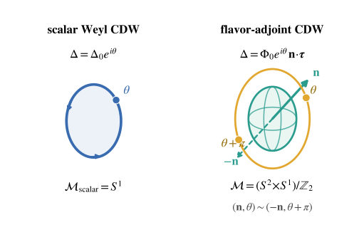
<figcaption class="paper-figure-caption"><b>Fig 1.</b> FIG. 1. Order-parameter manifolds of the scalar and flavor- adjoint Weyl CDWs. For a nondegenerate Weyl pair, the internode order is a complex scalar, ∆= ∆0eiθ, with fixed- amplitude manifold Mscalar = S1. For a flavor doublet, the adjoint condensate ∆= Φ0eiθn · τ carries both a CDW phase and an internal orientation n ∈S2. The identification (n, θ) ∼(−n, θ + π) gives M = (S2 × S1)/Z2.</figcaption>
</figure>
<figure class="paper-figure-card">
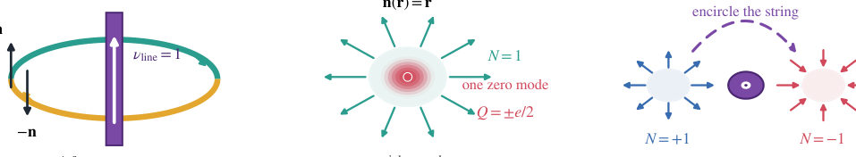
<figcaption class="paper-figure-caption"><b>Fig 2.</b> FIG. 2. Topological defects and their fermionic consequences in the matrix density wave. (a) The elementary line defect is a half-quantum vortex in which the density-wave phase winds by π while the flavor orientation reverses, n →−n. Its mass determinant winds once, so the resulting Alice axion string carries a single chiral mode, νline = 1. (b) A unit hedgehog, n(r) = ˆr, forces the adjoint mass to vanish at its core and binds one normalizable zero mode with charge sectors Q = ±e/2 at neutrality in the spectrally symmetric limit. (c) The line and point defects are intertwined: transporting a hedgehog around the Alice string reverses its winding, N →−N.</figcaption>
</figure>
</div>

<p><strong>Summary.</strong> This work analyzes Weyl semimetals exhibiting a Matrix Density Wave order, showing that internal flavor degrees of freedom induce complex topological defects. These defects include unit hedgehogs and Alice strings, which are linked by the condensate structure. The key finding is the realization of point-defect fractionalization, where localized zero modes carry fractional electronic charges ($\pm e/2$).</p>
<p><strong>Why it may be interesting.</strong> The concept of fractionalization and the interplay between different types of topological defects (point vs. line) is highly relevant to understanding emergent phenomena in strongly correlated electronic systems, such as fractional quantum Hall states or topological superconductors.</p>
<details>
<summary>Detailed structure</summary>
<p><strong>Main problem.</strong> Investigating how adding internal flavor degrees of freedom to interaction-driven Weyl density waves leads to point-defect fractionalization and intertwines point- and line-defect physics.</p>
<p><strong>Main result.</strong> The system supports both unit hedgehog monopoles and half-quantum Alice strings, which are linked by the condensate structure and result in fractional charges ($\pm e/2$) at the point defects.</p>
<p><strong>Method.</strong> Theoretical analysis using low-energy effective Hamiltonians, topological index theorems (Callias index), and solving radial differential equations for zero modes.</p>
<p><strong>Model / system.</strong> A minimal model based on a pair of opposite-chirality Weyl nodes exhibiting a Matrix Density Wave (MDW) order parameter, driven by a local flavor-symmetric repulsion.</p>
<p><strong>Key observables.</strong> Fractional charges ($\pm e/2$), chiral electronic modes ($
u_{ ext{line}}=1$), and the winding number ($N$) characterizing point defects.</p>
<p><strong>Important parameters / regimes.</strong> The interaction strength ($U$), the separation distance ($d$) between defects, and the topological winding number ($N$).</p>
<p><strong>Assumptions / limitations.</strong> The analysis is restricted to the adjoint component and assumes the asymptotic gap remains open for index theorem application.</p>
<p><strong>Figures summary.</strong> Figures illustrate the topological defects: the half-quantum vortex (Alice string) and the unit hedgehog monopole, showing how transporting one around the other reverses the winding number ($N 	o -N$).</p>
<p><strong>Paper structure.</strong> The paper progresses from establishing the general MDW order parameter, deriving the topological classification of line and point defects, calculating the fermionic zero modes using index theorems, and finally analyzing the fractional charge carried by isolated and paired defects.</p>
</details>
<details>
<summary>Abstract</summary>
<p>A conventional interaction-driven Weyl density wave is a complex scalar and supports vortex lines, but no topologically stable point defects. We show that two Weyl flavors do not merely duplicate this order. Starting from the matrix-valued internode coherence, a local flavor-symmetric repulsion selects a traceless adjoint condensate within the density-wave sector, while the fermionic ground-state energy locks its complex components into the collinear form $\mathbfΔ=Φ_0\mathbf{n} e^{iθ}$. The resulting order-parameter manifold, $(S^2\times S^1)/\mathbb Z_2$, supports both unit hedgehogs and half-quantum Alice strings of the same electronic mass that gaps the Weyl fermions. An elementary hedgehog binds a single normalizable zero mode whose empty and occupied sectors carry charges $-e/2$ and $+e/2$ at neutrality. An elementary Alice string carries a single chiral electronic mode despite its $π$ phase winding, and transporting a hedgehog around it reverses the hedgehog winding, $N\rightarrow-N$. Flavor therefore converts spontaneous translation breaking into a route to point-defect fractionalization and intertwines the point- and line-defect sectors of an interaction-generated electronic mass.</p>
</details>
<p><sub><a href="#top">↑ back to top</a></sub></p>

<p><a id="paper-2609.28369"></a></p>
<h3 id="simulation-of-a-battery-cell-on-quantum-computers-reactions-transport"><a href="http://arxiv.org/abs/2609.28369v1">Simulation of a Battery Cell on Quantum Computers: Reactions &amp; Transport</a></h3>
<p><strong>Authors:</strong> Albert J. Pool, Michael Schelling, Birger Horstmann<br>
<strong>Type:</strong> theory · <strong>Category:</strong> quantum information and computing · <strong>PDF:</strong> <a href="https://arxiv.org/pdf/2609.28369v1">https://arxiv.org/pdf/2609.28369v1</a><br>
<strong>Analysis basis:</strong> full PDF text, analyzed in chunks
<strong>Topic relevance:</strong> <code>Keldysh / 2PI / non-Gaussian methods</code> <strong>1/5</strong> · <code>methods for driven-dissipative</code> <strong>1/5</strong></p>
<div class="figure-strip-hint">↔ Scroll figures horizontally</div>
<div class="paper-figures-scroll">
<figure class="paper-figure-card">
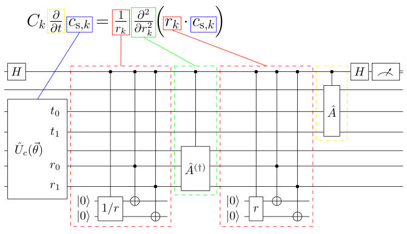
<figcaption class="paper-figure-caption"><b>Fig 1.</b> Figure 1: One of the quantum circuits encoding Eq. (1), showcasing the quantum implementation of a differ- ential equation for two qubits in space and time. The ansatz circuit ˆUc(⃗θ) (blue) encodes the concentration in time and space. The multiplication with r and 1/r (red) realises the transformation to spherical coordinates. The binary shift operator ˆA(†) (green) implements the spatial derivative; the dagger in parentheses indicates that both the left and right derivative are required (in separate circuits) to determine the Laplacian. The shift operator ˆA on the right (yellow) implements the time derivative. Both have an ancilla qubit as their most significant bit to remove...</figcaption>
</figure>
<figure class="paper-figure-card">
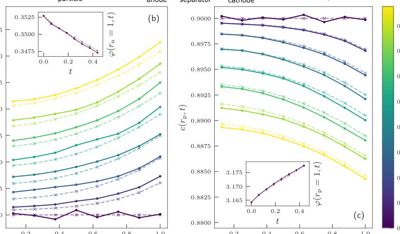
<figcaption class="paper-figure-caption"><b>Fig 2.</b> Figure 2: Concentration and potential for the anode and cathode for a charging process with a constant current density jn = 0.0125/jp = −0.0125 and ∆t = 1/16, starting at an anode concentration of 0.1 and a cathode concentration of 0.9. (a) Schematic explaining the two electrodes and representative particles, inspired by.34 (b) Concentration and electrochemical potential φn = ϕs,n −ϕe,n (inset) in the anode repre- sentative particle as a function of time and space, with an infidelity of 2.8 × 10−6 for the concentration. (c) Concentration and electrochemical potential φp = ϕs,p −ϕe,p (inset) in the cathode representative particle as a function of time and space, with an infidelity of 2.1 ×...</figcaption>
</figure>
<figure class="paper-figure-card">
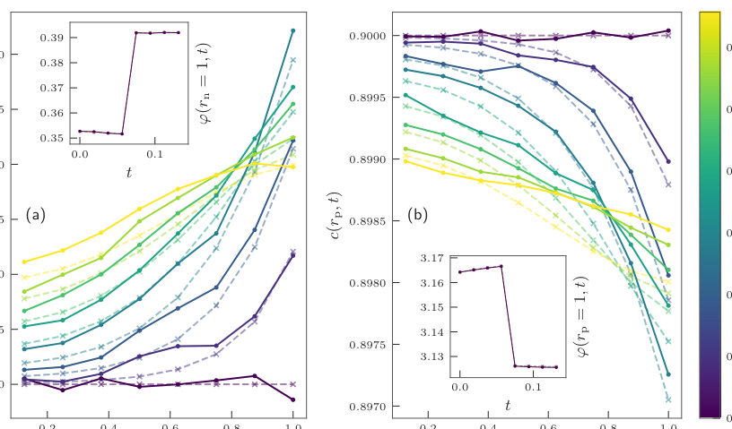
<figcaption class="paper-figure-caption"><b>Fig 3.</b> Figure 3: Concentration and potential for the anode and cathode for a GITT pulse with a duration of 0.075 and an equally long relaxation phase, starting at an anode concentration of 0.1 and a cathode concentration of 0.9. (a) Anode concentration and electrochemical potential φn = ϕs,n −ϕe,n (inset) as a function of time and space, with an infidelity of 4.5 × 10−7 for the concentration. (b) Cathode concentration and electrochemical potential φp = ϕs,p −ϕe,p (inset) as a function of time and space, with an infidelity of 3.0 × 10−7 for the concentration. In all figures, the dashed lines represent a numerical solution to the model equations.</figcaption>
</figure>
<figure class="paper-figure-card">
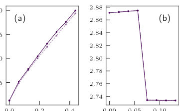
<figcaption class="paper-figure-caption"><b>Fig 4.</b> Figure 4: Cell voltage for (a) charging with a constant current and ∆t = 1/16 and (b) a GITT pulse lasting 0.075 s followed by an equally long relaxation phase. The dashed lines represent a numerical solution to the model equations.</figcaption>
</figure>
<figure class="paper-figure-card">
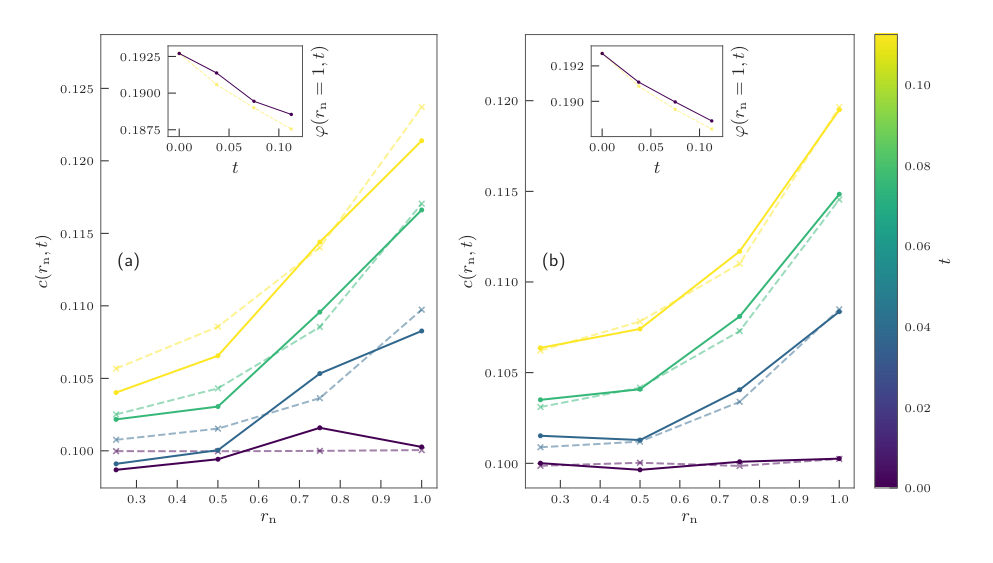
<figcaption class="paper-figure-caption"><b>Fig 5.</b> Figure 5: Comparison of two different circuits with 2 + 2 qubits (22 = 4 points in space and time) on the IBM Berlin fake backend, showing concentration as a function of time and space and (inset) potential as a function of time. (a) 4 layers with all-to-all connectivity. (b) 3 layers hardware-efficient, only including connections that are physically present. The dashed lines correspond to a result from a noiseless simulator for the same circuits. Both results were produced using 2.5 million shots with M3 error mitigation.</figcaption>
</figure>
</div>

<p><strong>Summary.</strong> This paper tackles the computational challenge of simulating battery cells by mapping the governing non-linear PDEs onto a quantum circuit framework. They propose and demonstrate a hybrid quantum-classical algorithm using the Feynman-Kitaev Hamiltonian to achieve the first quantum simulation of the SPMe model. This work shows a viable pathway for quantum computation to accelerate materials science simulations.</p>
<p><strong>Why it may be interesting.</strong> It represents a direct application of quantum computing principles (Hamiltonian encoding, variational algorithms) to solve complex, time-dependent, non-linear partial differential equations arising in condensed matter electrochemistry.</p>
<details>
<summary>Detailed structure</summary>
<p><strong>Main problem.</strong> Simulating complex electrochemical materials and systems, like battery cells, which are computationally limited by classical methods.</p>
<p><strong>Main result.</strong> The authors successfully demonstrated the first quantum simulation of a battery cell using the Single Particle Model with electrolyte (SPMe) via a hybrid quantum-classical algorithm.</p>
<p><strong>Method.</strong> A hybrid quantum-classical algorithm is employed, utilizing the Feynman-Kitaev Hamiltonian to encode the non-linear partial differential equations governing charge transport and reactions.</p>
<p><strong>Model / system.</strong> The system is a battery cell modeled by the SPMe, involving coupled non-linear PDEs for concentration and potential. The physics is encoded into a Hamiltonian structure suitable for quantum circuit implementation.</p>
<p><strong>Key observables.</strong> Cell voltage (U), solid concentration (c_s,k), and electrochemical potential ($\phi_k$).</p>
<p><strong>Important parameters / regimes.</strong> Diffusion coefficients ($D_{s,k}$), particle radii ($R^*_k$), and current density ($j_k$).</p>
<p><strong>Assumptions / limitations.</strong> The use of a hybrid quantum-classical approach is necessary due to current quantum hardware noise (NISQ era).</p>
<p><strong>Figures summary.</strong> Figures show the evolution of concentration and potential during charging and GITT cycles, comparing quantum simulation results to established numerical solutions.</p>
<p><strong>Paper structure.</strong> The paper introduces the computational bottleneck, details the adaptation of the SPMe equations into a quantum Hamiltonian formulation, describes the hybrid quantum-classical algorithm, and validates the method by simulating charging and GITT cycles.</p>
</details>
<details>
<summary>Abstract</summary>
<p>Simulations of electrochemical materials and systems accelerate technological progress, but are still limited by computational power. In particular, quantum computing offers prospects for higher resolutions, due to the exponential amount of data that can be stored in a quantum state. As current quantum computers are still noisy, we consider a hybrid quantum-classical algorithm, that divides the problem into smaller computational tasks. We describe how to implement such an algorithm for non-linear partial differential equations, the Feynman-Kitaev Hamiltonian, in a scalable way for an electrochemical system. We show how it can evaluate general electrochemical models and present a quantum simulation of the Single Particle Model with electrolyte (SPMe) as the first quantum simulation of a battery cell.</p>
</details>
<p><sub><a href="#top">↑ back to top</a></sub></p>

<p><a id="paper-2609.27993"></a></p>
<h3 id="spectral-gap-of-the-hexagonal-aklt-model-via-boundary-state-factorization"><a href="http://arxiv.org/abs/2609.27993v1">Spectral Gap of the Hexagonal AKLT Model via Boundary-State Factorization</a></h3>
<p><strong>Authors:</strong> Michael J. Kastoryano<br>
<strong>Type:</strong> theory · <strong>Category:</strong> statistical mechanics · <strong>PDF:</strong> <a href="https://arxiv.org/pdf/2609.27993v1">https://arxiv.org/pdf/2609.27993v1</a><br>
<strong>Analysis basis:</strong> full PDF text, analyzed in chunks
<strong>Topic relevance:</strong> <code>analog quantum simulation</code> <strong>1/5</strong> · <code>methods for driven-dissipative</code> <strong>1/5</strong></p>
<div class="figure-strip-hint">↔ Scroll figures horizontally</div>
<div class="paper-figures-scroll">
<figure class="paper-figure-card">
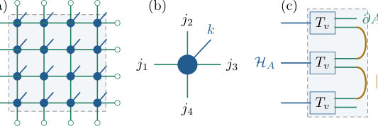
<figcaption class="paper-figure-caption"><b>Fig 1.</b> Figure 1: PEPS tensors and the regional map, redrawn from [9, Fig. 1]. (a) A square-lattice patch with open virtual boundary legs. (b) One tensor with four virtual indices (green) and one physical index (blue). (c) A chain schematic of the contraction that forms VA: gold arcs are virtual bonds, exterior virtual legs are inputs, and physical legs extend to the left.</figcaption>
</figure>
<figure class="paper-figure-card">
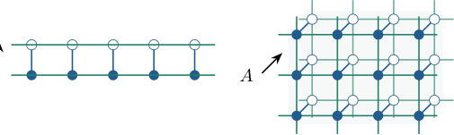
<figcaption class="paper-figure-caption"><b>Fig 2.</b> Figure 2: Boundary states, adapted from [9, Fig. 2]. The chain and the two-dimensional patch illustrate the same double contraction. Filled and open nodes represent the ket and bra tensors; blue links contract their physical indices. Green virtual legs at the boundary remain open, giving the input and output indices of ρ∂A.</figcaption>
</figure>
<figure class="paper-figure-card">
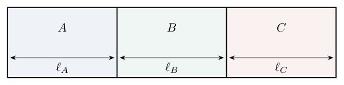
<figcaption class="paper-figure-caption"><b>Fig 3.</b> Figure 3: Rectangular decomposition for the martingale criterion, redrawn from [9, Fig. 3]. The overlap of AB and BC has width ℓB; the remaining geometric scale is L∗= max{ℓV , ℓA, ℓC}.</figcaption>
</figure>
<figure class="paper-figure-card">
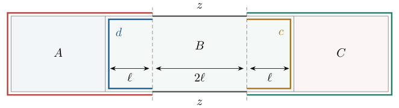
<figcaption class="paper-figure-caption"><b>Fig 4.</b> Figure 4: The shared boundary geometry, adapted from [9, Fig. 4]. The arcs a, d coincide on the left top and bottom buffers, while b, c coincide on the right buffers; the slight offsets make these overlaps visible. The two central segments form z. The drawing shows widths ℓ, 2ℓ, ℓacross B, for a total of 4ℓ. Each component of z has length 2ℓ, leaving distance ℓfrom its midpoint to either end.</figcaption>
</figure>
<figure class="paper-figure-card">
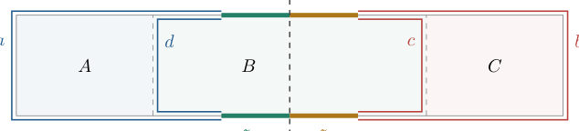
<figcaption class="paper-figure-caption"><b>Fig 5.</b> Figure 5: The geometry of Figure 4 with the middle cut inserted. Green and gold mark zL and zR on the upper and lower edges of B. Each displayed component of z has total length 2ℓ; the cut is at distance ℓfrom either end, where the exterior arcs outside z begin. Choosing a or d on the left and b or c on the right gives the four geometries.</figcaption>
</figure>
</div>

<p><strong>Summary.</strong> This work develops a powerful mathematical criterion to prove the spectral gap of quantum systems modeled by PEPS, particularly for the AKLT model on the hexagonal lattice. By analyzing how boundary states factorize across overlapping regions, the authors establish that exponential decay of this factorization error guarantees a positive spectral gap. This provides a systematic theoretical tool for characterizing the ground state properties of 2D quantum magnets.</p>
<p><strong>Why it may be interesting.</strong> The rigorous connection between local correlation decay (boundary response) and global spectral properties (spectral gap) is fundamental for understanding the stability and ground state properties of quantum materials modeled by PEPS.</p>
<details>
<summary>Detailed structure</summary>
<p><strong>Main problem.</strong> The paper establishes a rigorous, systematic condition based on the approximate factorization of overlapping boundary states to prove the existence of a spectral gap for quantum lattice models described by PEPS.</p>
<p><strong>Main result.</strong> The method successfully yields a uniform spectral gap for the hexagonal AKLT model and provides a general framework connecting local boundary response properties to the spectral gap of 2D parent Hamiltonians.</p>
<p><strong>Method.</strong> The core technique involves decomposing the boundary response induced by cutting bonds into a common, absorbable contribution and a remainder controlled by an instantaneous boundary metric, leading to a sufficient condition for the gap.</p>
<p><strong>Model / system.</strong> The analysis focuses on Projected Entangled Pair States (PEPS) applied to specific models, notably the Ising PEPS and the spin-3/2 AKLT model defined on the hexagonal lattice.</p>
<p><strong>Key observables.</strong> The spectral gap ($\lambda(\Lambda)$), the boundary state ($
ho_{\partial R}$), and the factorization error $\lVert P_{AB}P_{BC} - P_{ABC} 
Vert$.</p>
<p><strong>Important parameters / regimes.</strong> The overlap width ($\ell_B$) and the lattice geometry (hexagonal lattice).</p>
<p><strong>Assumptions / limitations.</strong> The method assumes the existence of a common linear transport to absorb the common boundary response, and for PEPS, it often requires compatible injective regional contractions.</p>
<p><strong>Figures summary.</strong> Figures illustrate the PEPS tensor structure, the boundary state calculation via double contraction, and the geometric decomposition used for the martingale criterion on rectangular regions.</p>
<p><strong>Paper structure.</strong> The paper progresses by first defining the boundary state criterion, then developing the common-response theorem using linear transport, and finally applying this framework to the Ising PEPS (reducing to a Dobrushin-Shlosman-type condition) and the hexagonal AKLT model (using rooted path expansions).</p>
</details>
<details>
<summary>Abstract</summary>
<p>We establish a sufficient condition under which overlapping PEPS boundary states satisfy the approximate factorization criterion for a spectral gap. The condition is formulated in terms of the boundary response induced by cutting bonds through the center of a rectangular region. We decompose this response into a contribution common to all four associated regions and a remainder measured in the instantaneous boundary metric. A single linear transport absorbs the common contribution and yields compatible factorization operators, with an error controlled solely by the remainder.   We apply this framework to Ising PEPS and to the spin-3/2 AKLT model on the hexagonal lattice. For Ising PEPS, the required boundary-response estimate reduces to a Dobrushin-Shlosman-type condition. For the hexagonal AKLT model, a rooted expansion in paths and loops isolates the common response, while a local comparison of boundary states together with a scalar Kotecký-Preiss estimate controls the remaining terms. In both cases, the factorization error decays exponentially with the overlap width, up to a prefactor proportional to the cut length. For AKLT, we establish the corresponding physical projector estimate and obtain a uniform spectral gap. For Ising PEPS, the gap implication additionally requires compatible injective regional contractions, as specified in the paper. More generally, the method provides a systematic route from locality of PEPS boundary response to spectral gaps of two-dimensional parent Hamiltonians.</p>
</details>
<p><sub><a href="#top">↑ back to top</a></sub></p>

<p><a id="paper-2609.28330"></a></p>
<h3 id="topological-fingerprints-of-commensurate-order-in-twisted-moire-lattices"><a href="http://arxiv.org/abs/2609.28330v1">Topological Fingerprints of Commensurate Order in Twisted Moiré Lattices</a></h3>
<p><strong>Authors:</strong> Collin J. Kovacs, Jiangxu Li, Yang Zhang, Konstantinos D. Vogiatzis, Adrian Del Maestro, Vasileios Maroulas<br>
<strong>Type:</strong> theory · <strong>Category:</strong> disordered systems and neural networks · <strong>PDF:</strong> <a href="https://arxiv.org/pdf/2609.28330v1">https://arxiv.org/pdf/2609.28330v1</a><br>
<strong>Analysis basis:</strong> full PDF text, analyzed in chunks
<strong>Topic relevance:</strong> <code>Frenkel-Kontorova</code> <strong>1/5</strong> · <code>analog quantum simulation</code> <strong>1/5</strong></p>
<div class="figure-strip-hint">↔ Scroll figures horizontally</div>
<div class="paper-figures-scroll">
<figure class="paper-figure-card">
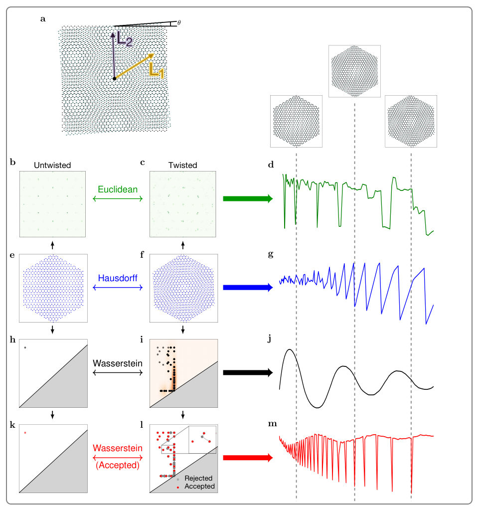
<figcaption class="paper-figure-caption"><b>Fig 1.</b> Figure 1 | Comparative structural descriptors for detecting commensurate order in twisted moir´e lattices. a Twisted bilayer graphene configuration with moir´e vectors L1, L2. b, c: Static structure factors in momentum space are compared with the Euclidean norm, with angle- dependent response in d. e, f: Point-cloud xy positions compared using the Hausdorff distance, with response in g. h, i: Persistence diagrams (PDs) compared using the Wasserstein distance, with response in j. k, l: δ-separated PDs compared using the Wasserstein distance, with response in m. Insets in the upper right show the fixed box size at three commensurate angles.</figcaption>
</figure>
<figure class="paper-figure-card">
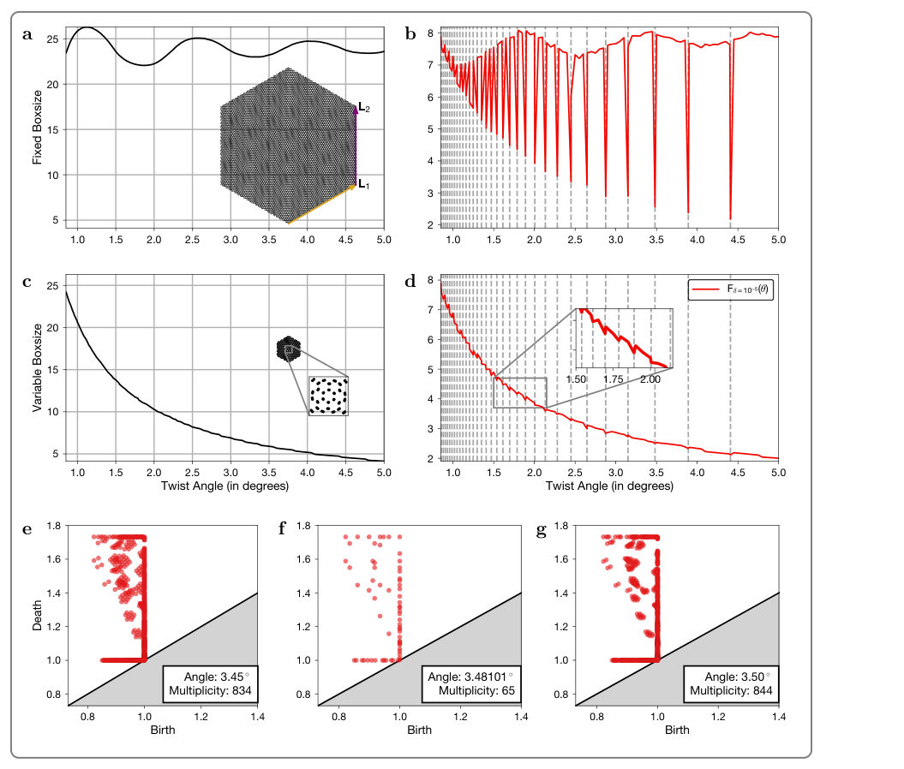
<figcaption class="paper-figure-caption"><b>Fig 2.</b> Figure 2 | Reduction in diagram multiplicity results in commensurate minima. a Fixed-box topological similarity versus twist angle, showing oscillatory behavior with few local minima. b δ-separated topological similarity Fδ=10−5(θ) over a fixed-box lattice with sharp min- ima at commensurate angles. c Variable-box topological similarity versus twist angle, showing predominantly monotonic decay. d Coarser topological signal Fδ=10−5(θ) over the variable box- size, illustrating the localization of extrema across decreasing cell size. e, f, g: δ-separated PDs at representative incommensurate, commensurate, and incommensurate twist angles, respectively, for δ = 10−5. The commensurate...</figcaption>
</figure>
<figure class="paper-figure-card">
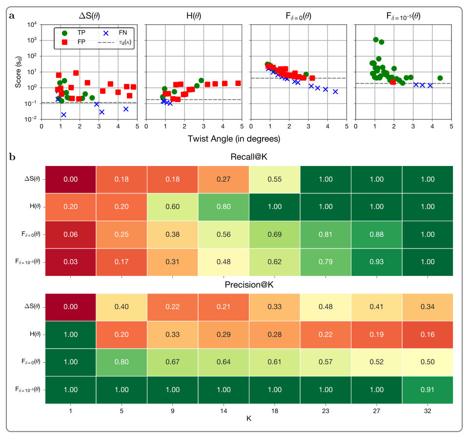
<figcaption class="paper-figure-caption"><b>Fig 3.</b> Figure 3 | Classification performance as additional twist angles are incorporated. a Detected peaks classified as true positives (TPs), false positives (FPs), and false negatives (FNs). The horizontal dashed line τd(κ) indicates the Median Absolute Deviation (MAD) threshold applied to sd(θ). TPs are detected candidate angles that match known commensurate angles within the chosen angular tolerance, FPs are detected candidates with no commensurate-angle match within that tolerance, and FNs are known commensurate angles for which no candidate is detected within that tolerance. b Heatmaps of Recall@K (top) and Precision@K (bottom) for ∆S(θ), H(θ), Fδ=0(θ), and Fδ=10−5(θ) as a function of K.</figcaption>
</figure>
<figure class="paper-figure-card">
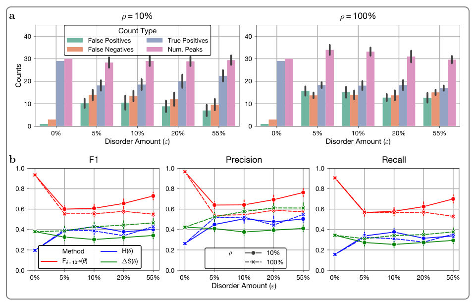
<figcaption class="paper-figure-caption"><b>Fig 4.</b> Figure 4 | Classification results over multiple disorder regimes. a Classification counts for sparse disorder (ρ = 10%) and global disorder (ρ = 100%) from the results of Fδ=10−5(θ). True Positives (TPs), False Positives (FPs), False Negatives (FNs), and the total detected number of peaks are shown. b Precision, recall, and F1 score as a function of disorder amplitude for fine (δ = 10−5) separation, compared with spectral- and geometric-based detection. Solid and dashed lines denote local (ρ = 10%) and global (ρ = 100%) disorder, respectively.</figcaption>
</figure>
<figure class="paper-figure-card">
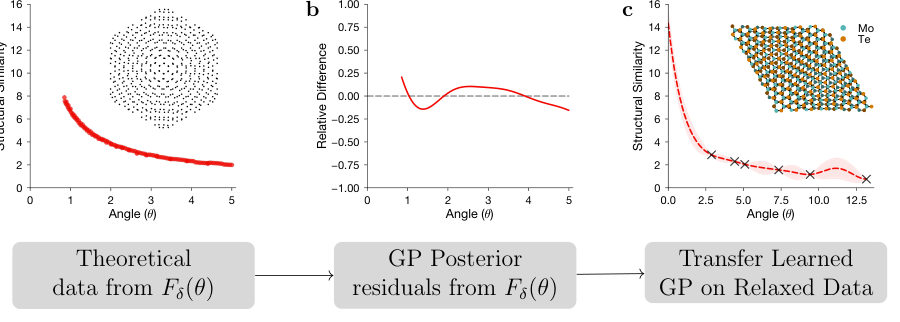
<figcaption class="paper-figure-caption"><b>Fig 5.</b> Figure 5 | Pipeline for Gaussian Process transfer-learning inference. a Theoretical dis- tance curve Fδ=10−5(θ). A moir´e point cloud twisted at a commensurate angle 5.085848◦is inset for visualization purposes. b The Gaussian Process (GP) posterior residual curve after training on Fδ. c Final overlay of the δ-level fit, with uncertainty bands shown after prediction on the DFT-relaxed similarities (black ×’s). MoTe2 dichalcogenide twisted at commensurate angle 5.085848◦is inset for visualization purposes.</figcaption>
</figure>
</div>

<p><strong>Summary.</strong> This paper proposes a novel topological data analysis framework using persistent homology to robustly identify commensurate moiré order in twisted bilayer materials. By filtering out noise using a small-neighborhood separation technique, the authors show that their topological descriptors accurately pinpoint known commensurate angles even when the atomic structure is perturbed by disorder or sampled sparsely. This establishes a powerful, disorder-resilient tool for characterizing moiré superlattices.</p>
<p><strong>Why it may be interesting.</strong> While the focus is on structural characterization rather than quantum dynamics, the use of topological data analysis (TDA) to extract robust, symmetry-aware fingerprints from complex, disordered atomic structures is highly relevant for characterizing the underlying physical states in quantum materials.</p>
<details>
<summary>Detailed structure</summary>
<p><strong>Main problem.</strong> The primary challenge is developing a robust method to identify commensurate moiré order in twisted bilayer materials directly from atomic coordinates, overcoming limitations of traditional spectral or geometric methods sensitive to disorder.</p>
<p><strong>Main result.</strong> The authors introduce a data-driven topological framework using persistent homology with a small-neighborhood separation filter, which successfully recovers sharp signatures corresponding to known commensurate angles even under significant positional disorder.</p>
<p><strong>Method.</strong> The method treats atomic configurations as point clouds and applies persistent homology to extract multiscale topological signatures. A key innovation is the small-neighborhood separation filter applied to persistence diagrams to enhance the signal related to periodicity.</p>
<p><strong>Model / system.</strong> The study focuses on Moiré patterns in twisted bilayer materials, using twisted MoTe2 dichalcogenide bilayers and twisted bilayer graphene as test cases. The analysis involves projecting 3D atomic coordinates into 2D point clouds.</p>
<p><strong>Key observables.</strong> Topological descriptors derived from persistent homology, specifically sharp minima in Wasserstein distances between twisted and untwisted reference configurations, which correlate with commensurate angles.</p>
<p><strong>Important parameters / regimes.</strong> Twist angle ($  heta$), disorder magnitude ($\epsilon$), and sampling ratio ($
ho$) are key parameters used to test the robustness of the descriptor.</p>
<p><strong>Assumptions / limitations.</strong> The framework assumes that the topological signature of commensurate order manifests as a distinct, sharp feature (minimum) in the calculated topological distance metric.</p>
<p><strong>Figures summary.</strong> Figures compare the performance of various structural descriptors (SSF, Hausdorff, PDs) for detecting commensurate order, showing that the proposed $\delta$-separated topological score yields the clearest and most robust correlation with known angles.</p>
<p><strong>Paper structure.</strong> The paper progresses by first identifying the limitations of existing methods, introducing the topological framework using persistent homology, benchmarking this framework against geometric/spectral measures, and finally demonstrating its robustness by testing it under controlled levels of positional disorder and sparsity.</p>
</details>
<details>
<summary>Abstract</summary>
<p>Moiré patterns in twisted bilayer materials exhibit long-range periodic order that is highly sensitive to twist angle. Identifying commensurate angles from real-space atomic structures remains challenging, as spectral and geometric methods emphasize global periodicity and are sensitive to disorder and finite-size effects. Here, we introduce a data-driven topological framework that quantifies moiré periodicity by treating atomic configurations as point-cloud data and extracting multiscale signatures using persistent homology. At the core of our approach is a small-neighborhood separation filter that removes redundant local motifs in persistence diagrams while preserving key structural features, enabling sharp minima in Wasserstein distances between twisted and untwisted reference configurations that accurately recover commensurate angles. We benchmark this framework against geometric and spectral similarity measures and show that the resulting topological descriptors remain stable under positional disorder ranging from weak to strong perturbations in the bond length. We further transfer these descriptors using a constrained Gaussian process surrogate to sparsely sampled configurations of a twisted MoTe$_2$ dichalcogenide bilayer. These results establish topological descriptors with neighborhood separation as a robust framework for identifying commensurate order in moiré systems and tracking commensurate structural similarity under disorder, sparsity, and finite-size effects.</p>
</details>
<p><sub><a href="#top">↑ back to top</a></sub></p>

<p><a id="paper-2609.28241"></a></p>
<h3 id="beyond-maximal-entanglement-exact-resources-for-multiparty-encrypted-quantum-cloning"><a href="http://arxiv.org/abs/2609.28241v1">Beyond Maximal Entanglement: Exact Resources for Multiparty Encrypted Quantum Cloning</a></h3>
<p><strong>Authors:</strong> Pritam Roy, Shashank Gupta<br>
<strong>Type:</strong> theory · <strong>Category:</strong> quantum information and computing · <strong>PDF:</strong> <a href="https://arxiv.org/pdf/2609.28241v1">https://arxiv.org/pdf/2609.28241v1</a><br>
<strong>Analysis basis:</strong> full PDF text, analyzed in chunks
<strong>Topic relevance:</strong> <code>quantum measurements</code> <strong>1/5</strong></p>
<div class="figure-strip-hint">↔ Scroll figures horizontally</div>
<div class="paper-figures-scroll">
<figure class="paper-figure-card">
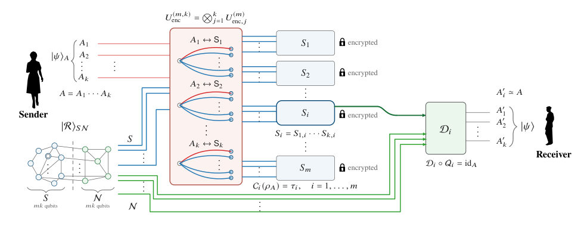
<figcaption class="paper-figure-caption"><b>Fig 1.</b> Figure 1: Operational architecture of multiparty encrypted quantum cloning. An arbitrary k-qubit state |ψ⟩A, with A = A1 · · · Ak, is encoded together with a pure multipartite resource |R⟩SN containing ν = mk signal qubits and ν noise, or key, qubits. The signal register has two compatible decompositions: the logical sector Sj = (Sj,1, . . . , Sj,m) is associated with input qubit Aj, while Si = S1,i · · · Sk,i forms the ith encrypted output. The sector-wise encoder leaves the common key N untouched. Each Si is individually concealed, whereas SiN permits exact recovery of the complete logical state. The registers S1, . . . , Sm therefore constitute alternative encrypted recovery pathways...</figcaption>
</figure>
<figure class="paper-figure-card">
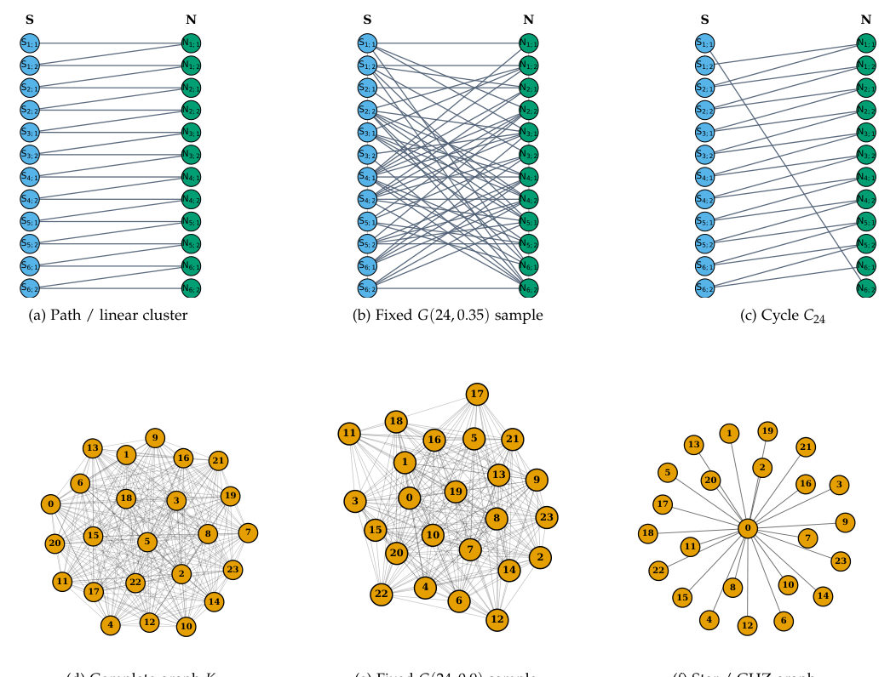
<figcaption class="paper-figure-caption"><b>Fig 2.</b> Figure 2: Representative 24-qubit graph states for the (m, k) = (2, 6) task. Top row: certified resources: (a) a path / linear cluster, (b) a fixed sparse Erd˝os–Rényi sample G(24, 0.35) [47, 48], and (c) the cycle C24. Each admits a balanced cut with rankF2 BSN = 12. Bottom row: excluded resources: (d) the complete graph K24, (e) a fixed dense Erd˝os–Rényi sample G(24, 0.9) [47, 48], and (f) the star/GHZ graph. For each excluded graph, the maximum cut rank over all balanced signal–noise bipartitions is strictly smaller than 12. The Erd˝os–Rényi examples are fixed sampled realizations and should not be interpreted as evidence for an edge-density threshold; their explicit adjacency data are...</figcaption>
</figure>
</div>

<p><strong>Summary.</strong> This theoretical paper characterizes the precise quantum states that can function as resources for encrypted quantum cloning. It establishes that exact recovery requires specific correlation structures within the resource, not just high entanglement. The findings exclude large families of states, such as the Dicke states, from being valid resources for this cryptographic task.</p>
<p><strong>Why it may be interesting.</strong> The work provides deep structural constraints on quantum resources, showing that mere entanglement quantity is insufficient; the specific correlation structure relative to the encoding scheme dictates feasibility.</p>
<details>
<summary>Detailed structure</summary>
<p><strong>Main problem.</strong> The paper characterizes the exact multipartite pure quantum states that can serve as resources for performing 'Encrypted Quantum Cloning' (EQC).</p>
<p><strong>Main result.</strong> The resource state's suitability depends not only on its total entanglement but critically on how its correlations are organized relative to the specific encoding architecture. The entire Dicke family of states is proven to be excluded for this task.</p>
<p><strong>Method.</strong> The authors derive necessary and sufficient conditions for exact recovery by analyzing the structure of the signal-noise cut and applying information-theoretic criteria derived from the cloning process.</p>
<p><strong>Model / system.</strong> The model involves distributing an unknown $k$-qubit state ($\vert \psi 
angle_A$) among $m$ encrypted clones using a resource state $\vert R 
angle_{SN}$ and a sector-wise two-Pauli encoder.</p>
<p><strong>Key observables.</strong> Signal-noise entanglement (ebits), the rank of the signal-noise cut matrix, and the structure of the signal marginal $
ho_S$.</p>
<p><strong>Important parameters / regimes.</strong> Number of clones ($m \ge 2$), number of input qubits ($k$), and the specific encoder architecture.</p>
<p><strong>Assumptions / limitations.</strong> The analysis is performed for a fixed sector-wise two-Pauli encoder, although general bounds independent of the encoder are also derived.</p>
<p><strong>Figures summary.</strong> Figure 1 illustrates the operational architecture of EQC, showing the encoding process and the recovery mechanism from individual clones and the key.</p>
<p><strong>Paper structure.</strong> The paper proceeds by defining the EQC problem, deriving necessary conditions for exact recovery, characterizing the required structure of the resource state $
ho_S$ for fixed encoders, and finally testing these conditions against specific resource families like graph states and Dicke states.</p>
</details>
<details>
<summary>Abstract</summary>
<p>Encrypted quantum cloning distributes an unknown $k$-qubit state among $m$ encrypted clones so that no individual clone reveals the input, yet the state can be recovered from any one clone together with a common quantum key. We ask the inverse question: for a fixed encoding architecture, which multipartite pure states can serve as exact resources for this task? For $m\ge2$, we completely characterize the pure resources compatible with a sector-wise two-Pauli encoder, with necessity holding for arbitrary completely positive trace-preserving (CPTP) recovery maps. For even $m$, exact recovery requires maximal entanglement across the signal--noise cut. For odd $m$, less entanglement can suffice, provided that the surviving signal correlations have the structure selected by the encoder. We further show, without fixing the encoder, that exact recovery from every authorized subsystem already implies perfect concealment of each individual signal and requires at least $(m-1)k$ ebits of signal--noise entanglement. For graph states, the resource classification reduces to an exact condition on the kernel of the signal--noise cut matrix, leading to binary certification and constructive Clifford recovery. We identify rank-deficient graph resources that attain the architecture-independent entanglement bound and prove that the entire Dicke family, including $W$ states, is excluded for every sector-wise two-Pauli encoder. Our results show that encrypted recovery depends not only on how much entanglement a resource contains, but also on how its correlations are organized relative to the encoder.</p>
</details>
<p><sub><a href="#top">↑ back to top</a></sub></p>

<p><a id="paper-2609.27565"></a></p>
<h3 id="efficient-learning-of-clifford-disentanglers-and-typical-math829math-doped-unitaries-with-exponentially-more-math830math-gates"><a href="http://arxiv.org/abs/2609.27565v1">Efficient learning of Clifford disentanglers and typical $t$-doped unitaries with exponentially more $T$ gates</a></h3>
<p><strong>Authors:</strong> Gerard Aguilar, Sofiene Jerbi, Jens Eisert, Lennart Bittel<br>
<strong>Type:</strong> theory · <strong>Category:</strong> quantum information and computing · <strong>PDF:</strong> <a href="https://arxiv.org/pdf/2609.27565v1">https://arxiv.org/pdf/2609.27565v1</a><br>
<strong>Analysis basis:</strong> full PDF text, analyzed in chunks
<strong>Topic relevance:</strong> <code>quantum measurements</code> <strong>1/5</strong></p>
<div class="figure-strip-hint">↔ Scroll figures horizontally</div>
<div class="paper-figures-scroll">
<figure class="paper-figure-card">
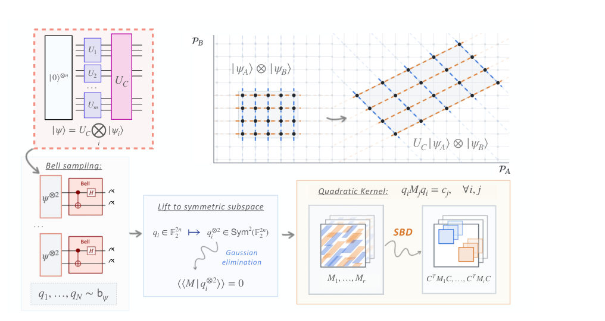
<figcaption class="paper-figure-caption"><b>Fig 1.</b> Figure 1: Graphical overview of the protocol in Algorithm 1. From m Bell samples {qi}i of an unknown state vector |ψ⟩, Gaussian elimination on the lifted vectors q⊗2 i ∈F2n 2 ⊗F2n 2 , yields a basis of the quadratic kernel Ker2,m(ψ) of the distribution, consisting of quadratic forms M satisfying qT i Mqi = c for every observed outcome. For state vectors of the form |ψ⟩= UC Nm i=1 |ψi⟩ci this kernel has a common hidden block structure. Indeed, before the action of UC, the Bell distribution factorizes across the product decomposition, forcing its quadratic symmetries to respect the corresponding blocks. The unknown Clifford scrambles both the distribution and its symmetries through an affine...</figcaption>
</figure>
</div>

<p><strong>Summary.</strong> This paper presents efficient algorithms to recover the hidden product structure within quantum states that have been scrambled by an unknown Clifford unitary. By analyzing the quadratic symmetries of the state's Bell distribution, the authors linearize the problem, enabling the recovery of the disentangling Clifford and the underlying partitions. This framework is particularly powerful for learning complex, T-doped quantum circuits previously thought inaccessible.</p>
<p><strong>Why it may be interesting.</strong> The techniques developed for characterizing structured quantum states via symmetry analysis are highly relevant for certifying quantum computations and understanding the limitations imposed by gate sets (like Clifford vs. T-gates).</p>
<details>
<summary>Detailed structure</summary>
<p><strong>Main problem.</strong> The paper develops efficient algorithms to test for and recover hidden tensor-product structure in unknown pure quantum states $|\psi
angle = U_C igotimes_i |\psi_i
angle$, where $U_C$ is an unknown Clifford unitary.</p>
<p><strong>Main result.</strong> The authors provide polynomial-time algorithms to recover the disentangling Clifford $U_C$ and the hidden product partitions, extending these methods to efficiently learn typical $t$-doped Clifford unitaries in regimes with exponentially more T gates.</p>
<p><strong>Method.</strong> The core method involves analyzing the quadratic symmetries of the state's Bell distribution, linearizing the problem by block-diagonalizing these symmetries, and utilizing classical post-processing.</p>
<p><strong>Model / system.</strong> The system consists of pure quantum states on $n$ qubits, $|\psi
angle$, whose structure is obscured by an arbitrary unknown Clifford unitary $U_C$. The analysis focuses on the algebraic properties of the state's Bell distribution.</p>
<p><strong>Key observables.</strong> Quadratic symmetries of the Bell distribution, $q^T M q = c$, and the ability to block-diagonalize the symmetry kernel $ ext{Ker}_2(\psi)$.</p>
<p><strong>Important parameters / regimes.</strong> The number of qubits ($n$), the degree of T-doping ($t$), and the required sample complexity ($N$).</p>
<p><strong>Assumptions / limitations.</strong> The state must possess a hidden tensor-product structure of the form $|\psi
angle = U_C igotimes_i |\psi_i
angle$, and the symmetries must retain a characteristic quadratic structure.</p>
<p><strong>Paper structure.</strong> The paper builds from defining the problem (testing/learning hidden structure) to developing the mathematical machinery (analyzing quadratic symmetries and block-diagonalization) and concluding with concrete applications (learning $t$-doped unitaries and Hamiltonian compression).</p>
</details>
<details>
<summary>Abstract</summary>
<p>Highly entangled and highly non-stabilizer quantum states need not be hard to learn. We give efficient algorithms for testing and recovering hidden tensor-product structure in unknown pure state vectors of the form $\lvertψ\rangle = U_C \bigotimes_i \lvertψ_i\rangle$, where $U_C$ is an arbitrary unknown Clifford unitary. Although the Clifford can thoroughly scramble the visible product structure, we prove that the Bell distribution retains a characteristic family of quadratic symmetries. By simultaneously block-diagonalising these symmetries, our algorithms linearize the problem and manage to recover both a disentangling Clifford and the hidden partitions with polynomial sample and computational complexity. This may be viewed as an extension of the abelian StateHSP paradigm in which classical post-processing exposes genuinely quadratic structure. Applied to Choi states, the method yields efficient proper learning algorithms for typical $t$-doped Clifford unitaries in regimes containing exponentially more $T$ gates than previously accessible: the required condition fails only for an exponentially small fraction of circuits when $t\sim n$, and continues to hold for a constant fraction even when $t=2n$. Our framework also provides tools for compressing structured many-body Hamiltonians and suggests benchmarking protocols for encoded logical product states in the early fault-tolerant regime.</p>
</details>
<p><sub><a href="#top">↑ back to top</a></sub></p>

<p><a id="paper-2609.27132"></a></p>
<h3 id="exact-equivariance-from-ordinary-neural-networks-for-lattice-many-body-dynamics"><a href="http://arxiv.org/abs/2609.27132v1">Exact Equivariance from Ordinary Neural Networks for Lattice Many-Body Dynamics</a></h3>
<p><strong>Authors:</strong> Ho Jang, Sankha Subhra Bakshi, Gia-Wei Chern<br>
<strong>Type:</strong> theory · <strong>Category:</strong> strongly correlated electrons · <strong>PDF:</strong> <a href="https://arxiv.org/pdf/2609.27132v1">https://arxiv.org/pdf/2609.27132v1</a><br>
<strong>Analysis basis:</strong> full PDF text, analyzed in chunks
<strong>Topic relevance:</strong> <code>analog quantum simulation</code> <strong>1/5</strong></p>
<div class="figure-strip-hint">↔ Scroll figures horizontally</div>
<div class="paper-figures-scroll">
<figure class="paper-figure-card">
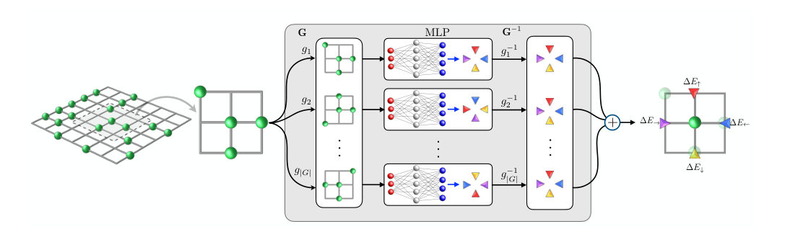
<figcaption class="paper-figure-caption"><b>Fig 1.</b> FIG. 1. Equivariant projection network (EPN) for Falicov–Kimball dynamics. Each D4 operation transforms the local f- electron configuration before it enters a shared MLP. The four predicted hopping free-energy differences are transformed back and averaged, yielding an exactly equivariant output.</figcaption>
</figure>
<figure class="paper-figure-card">
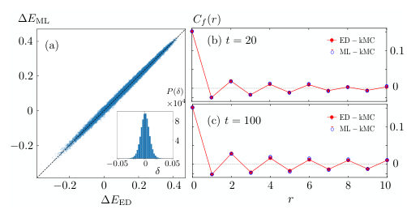
<figcaption class="paper-figure-caption"><b>Fig 2.</b> FIG. 2. Microscopic and dynamical benchmarks of the EPN for the Falicov–Kimball model. (a) Predicted hopping energy changes ∆EML versus exact-diagonalization values ∆EED. The dashed line denotes perfect agreement; the inset shows the distribution of prediction errors δ = ∆EML−∆EED. (b,c) f-electron density correlation function Cf(r) = ⟨nf i nf j ⟩−ρ2 f, with r = |ri−rj|, obtained from ED-kMC and EPN-kMC sim- ulations after a thermal quench at (b) t = 20 and (c) t = 100 sweeps.</figcaption>
</figure>
<figure class="paper-figure-card">

<figcaption class="paper-figure-caption"><b>Fig 3.</b> FIG. 3. Large-scale FK phase ordering with EPN-kMC. (a– c) Effective Ising configurations at t = 100, 1000, and 5000 sweeps show coarsening of superclusters. Red and blue dis- tinguish opposite sublattice polarities. (d) Microscopic f- electron configuration in the green square in (c), resolving the disconnected checkerboard clusters underlying the larger domains.</figcaption>
</figure>
<figure class="paper-figure-card">

<figcaption class="paper-figure-caption"><b>Fig 4.</b> FIG. 4. Invariant projection network (IPN) for Holstein dynamics. For each lattice site i, the local distortion environment Xi is transformed by all g ∈D4 and evaluated by a shared MLP; averaging the scalar outputs gives an invariant local energy ϵi. Applying the same IPN to overlapping local environments throughout the lattice forms the standard Behler–Parrinello construction, EML = P</figcaption>
</figure>
<figure class="paper-figure-card">

<figcaption class="paper-figure-caption"><b>Fig 5.</b> FIG. 5. Microscopic and dynamical benchmarks of the IPN for the Holstein model. (a) IPN-predicted forces FML ver- sus exact-diagonalization values FED. The dashed line de- notes perfect agreement; the inset shows the distribution of prediction errors δ = FML −FED. (b,c) Equal-time lattice- distortion correlation function CQ(r) obtained from ED and IPN Langevin dynamics after a thermal quench at (b) t = 40 and (c) t = 160.</figcaption>
</figure>
</div>

<p><strong>Summary.</strong> This paper introduces an Equivariant Projection Network (EPN) that allows ordinary neural networks to generate predictions that inherently respect the underlying physical symmetries of lattice Hamiltonians. By averaging predictions across symmetry transformations, the method bypasses the need for specialized equivariant network architectures. This provides an accessible and accurate tool for simulating complex, symmetry-governed dynamics in correlated electron systems.</p>
<p><strong>Why it may be interesting.</strong> The development of symmetry-preserving ML surrogates is crucial for simulating complex quantum materials dynamics, providing a computationally tractable route to study phenomena like charge ordering and phase transitions in systems where traditional methods are too slow.</p>
<details>
<summary>Detailed structure</summary>
<p><strong>Main problem.</strong> Developing efficient, symmetry-preserving machine learning surrogates to replace computationally expensive electronic structure calculations for large-scale simulations of correlated electron systems.</p>
<p><strong>Main result.</strong> The proposed Equivariant Projection Network (EPN) framework successfully generates exactly equivariant surrogates for electronic forces and transition energies directly from ordinary MLPs.</p>
<p><strong>Method.</strong> The EPN enforces symmetry by evaluating an ordinary MLP on all symmetry-related configurations and averaging the results according to the finite-group averaging formula.</p>
<p><strong>Model / system.</strong> The work applies to correlated electron systems, specifically demonstrating success with the Falicov–Kimball model and the Holstein model, which involve lattice dynamics and charge ordering.</p>
<p><strong>Key observables.</strong> Directional hopping free-energy differences ($\Delta E_{i,\alpha}$), conservative lattice forces ($\mathbf{F}_{	ext{ML}}$), and charge-density-wave coarsening.</p>
<p><strong>Important parameters / regimes.</strong> The method is applicable to systems with known, finite lattice point groups ($G$).</p>
<p><strong>Assumptions / limitations.</strong> The approximation relies on the assumption of electronic nearsightedness and that the local environment contains sufficient information to predict local dynamics.</p>
<p><strong>Figures summary.</strong> Figure 1 illustrates the EPN for Falicov–Kimball dynamics using $D_4$ symmetry. Figure 2 compares predicted hopping free-energy differences ($\Delta E_{ML}$) against Exact Diagonalization (ED) values and shows agreement in kMC simulations.</p>
<p><strong>Paper structure.</strong> The paper introduces the EPN framework, demonstrates its application to calculate directional hopping free-energy differences in the Falicov-Kimball model, and then applies it to generate conservative lattice forces for the Holstein model, validating results against ED benchmarks and large-scale simulations.</p>
</details>
<details>
<summary>Abstract</summary>
<p>Large-scale simulations of correlated electron systems require repeated evaluations of the electronic forces and transition energies driving collective dynamics. Machine-learning surrogates alleviate this bottleneck, but incorporating symmetry often involves carefully designed descriptors or specialized network architectures. We show that ordinary multilayer perceptrons equipped with finite-group averaging provide exactly equivariant surrogates directly from microscopic configurations. The construction separates symmetry enforcement from the internal network architecture and applies to both discrete and continuous lattice degrees of freedom. In the Falicov--Kimball model, it predicts directional hopping free-energy differences; in the Holstein model, its invariant limit generates conservative lattice forces. Benchmarks against exact diagonalization establish microscopic accuracy and agreement of dynamical correlations, while large-scale simulations recover multiscale charge ordering and charge-density-wave coarsening. These results demonstrate an accessible, reusable route to symmetry-preserving many-body dynamics for systems with finite lattice point groups.</p>
</details>
<p><sub><a href="#top">↑ back to top</a></sub></p>

<p><a id="paper-2609.26914"></a></p>
<h3 id="maximal-total-quantum-dimension-at-bounded-rank-in-dijkgraaf-witten-theories"><a href="http://arxiv.org/abs/2609.26914v1">Maximal Total Quantum Dimension at Bounded Rank in Dijkgraaf-Witten Theories</a></h3>
<p><strong>Authors:</strong> Ce Shen<br>
<strong>Type:</strong> theory · <strong>Category:</strong> strongly correlated electrons · <strong>PDF:</strong> <a href="https://arxiv.org/pdf/2609.26914v1">https://arxiv.org/pdf/2609.26914v1</a><br>
<strong>Analysis basis:</strong> full PDF text, analyzed in chunks
<strong>Topic relevance:</strong> <code>analog quantum simulation</code> <strong>1/5</strong></p>
<div class="figure-strip-hint">↔ Scroll figures horizontally</div>
<div class="paper-figures-scroll">
<figure class="paper-figure-card">

<figcaption class="paper-figure-caption"><b>Fig 1.</b> Figure 1. Cylindrical bipartition of a spatial 2-torus into regions A and ¯A. The entanglement cut consists of two disjoint circles of lengths L1 and L2. The state |a⟩corresponds to threading an anyon flux label a through the cylinder, giving rise to the universal TEE in (2.3). (Reproduced from Ref. [15].)</figcaption>
</figure>
</div>

<p><strong>Summary.</strong> This theoretical paper studies the maximum possible topological complexity, quantified by the total quantum dimension, in 2+1 dimensional topological phases modeled by Dijkgraaf-Witten theories. By analyzing the impact of gauge group structure and topological twists, the authors derive sharp asymptotic bounds on this dimension relative to the system's rank. This work provides quantitative constraints crucial for classifying exotic topological order phases.</p>
<p><strong>Why it may be interesting.</strong> The connection between topological invariants (like quantum dimension) and entanglement entropy provides deep insights into the nature of quantum order, which is fundamental to understanding strongly correlated electron systems and topological phases.</p>
<details>
<summary>Detailed structure</summary>
<p><strong>Main problem.</strong> The paper investigates the maximal total quantum dimension achievable in three-dimensional Dijkgraaf-Witten (DW) theories subject to a bound on the categorical rank.</p>
<p><strong>Main result.</strong> It establishes that introducing cocycle twists in Abelian gauge groups can elevate the growth of the total quantum dimension from square-root to linear in the rank cutoff, and provides upper bounds like $O((\log R)^2)$ for almost-simple groups.</p>
<p><strong>Method.</strong> The analysis uses advanced group theory, optimization techniques, and asymptotic analysis to relate topological invariants (quantum dimensions) to the constraints imposed by the categorical rank.</p>
<p><strong>Model / system.</strong> The theoretical framework is based on (2+1)-dimensional topological phases described by Unitary Modular Tensor Categories, specifically realized through Dijkgraaf-Witten theories involving finite gauge groups and 3-cocycle twists.</p>
<p><strong>Key observables.</strong> Total Quantum Dimension ($D(C)$), Topological Entanglement Entropy (TEE), and Categorical Rank ($r(C)$).</p>
<p><strong>Important parameters / regimes.</strong> The rank cutoff $R$, the structure of the gauge group $G$ (e.g., $(\mathbb{Z}_p)^n$, almost-simple groups), and the topological twist $\omega$.</p>
<p><strong>Assumptions / limitations.</strong> The analysis assumes the validity of the DW theory description for the topological order and relies on specific structural properties of the gauge groups being studied.</p>
<p><strong>Figures summary.</strong> Not specified, but the notes refer to Figure 1 illustrating the cylindrical bipartition for TEE calculation.</p>
<p><strong>Paper structure.</strong> The paper proceeds by defining the optimization problem, analyzing the effect of cocycle twists on Abelian groups, deriving sharp envelopes for untwisted theories (like almost-simple groups), and concluding with a comparison to WZW models and the general conjecture.</p>
</details>
<details>
<summary>Abstract</summary>
<p>We investigate the maximal total quantum dimension at a bounded categorical rank cutoff $R$ in three-dimensional Dijkgraaf--Witten theories. This optimization problem physically governs the maximal state-optimized torus topological entanglement entropy at a fixed torus ground-state degeneracy, while providing a quantitative constraint on the search space required to classify these topological order phases. We analyze how topological twists (3-cocycles) and gauge-group structures independently govern this trade-off. For elementary-Abelian gauge groups at a fixed prime $p$, we prove that introducing cocycle twists elevates the maximum total quantum dimension from square-root growth $Θ_p(R^{1/2})$ to linear growth $Θ_p(R)$ in the rank cutoff, driven by the geometric protection of cyclic holonomies. For untwisted theories, we establish sharp envelopes for symmetric and alternating gauge groups, and derive group-theoretic bounds across almost-simple, solvable, and radical-free families. In particular, almost-simple groups and their direct products obey a quadratic-logarithmic upper envelope: $\log\mathcal{D} = O((\log R)^2)$. Finally, we compare these scales against WZW models and discuss the status of the general quadratic-logarithmic envelope conjecture.</p>
</details>
<p><sub><a href="#top">↑ back to top</a></sub></p>

<p><a id="paper-2609.27318"></a></p>
<h3 id="minimal-representations-of-topology-preserving-quantum-like-states"><a href="http://arxiv.org/abs/2609.27318v1">Minimal representations of topology-preserving quantum-like states</a></h3>
<p><strong>Authors:</strong> William Horvat, Debadrita Saha, Nicolás Gigena, Prineha Narang, Gregory D. Scholes<br>
<strong>Type:</strong> theory · <strong>Category:</strong> quantum information and computing · <strong>PDF:</strong> <a href="https://arxiv.org/pdf/2609.27318v1">https://arxiv.org/pdf/2609.27318v1</a><br>
<strong>Analysis basis:</strong> full PDF text, analyzed in chunks
<strong>Topic relevance:</strong> <code>analog quantum simulation</code> <strong>1/5</strong></p>
<div class="figure-strip-hint">↔ Scroll figures horizontally</div>
<div class="paper-figures-scroll">
<figure class="paper-figure-card">

<figcaption class="paper-figure-caption"><b>Fig 1.</b> FIG. 1. (a) Graph G(1) with subgraphs G(1) A and G(1) B shows the construction of a QL-bit. The subgraphs are k-regular, with k = 5, while the coupling between them is ℓ-regular, ℓbeing equal to 1. QL-bit graph G(2) is also constructed in a similar manner. (b) Cartesian product G = G(1)□G(2) of QL-bits in (a). For each node in G(2), there is a copy of G(1). (c) Quotient graph formed by taking the equitable partition generated by holding constant the subgraph indices of second graph G(2) in the Cartesian product. (d) The minimal representation of the QL-bit product, subgraphs of each QL-bit are reduced to nodes and the coupling ℓfor between each subgraph persists.</figcaption>
</figure>
<figure class="paper-figure-card">

<figcaption class="paper-figure-caption"><b>Fig 2.</b> FIG. 3. Method to form quantum-like products without first generating the Cartesian product: (a) QL-bits G(1), G(2) and G(3) are contracted to their minimal representation quotient graph. Their respective subgraphs are reduced to single vertices (shown using dotted gray arrows) while preserving the coupling ℓbetween nodes. This allows for the construction of the quotient graph without first forming the full Cartesian product from QL-bits. (b),(c) Direct construction of quotient graphs, π(G(1)□G(2)) = Q(1)□Q(2) and π(G(1)□G(2)□G(3)) = Q(1)□Q(2)□Q(3). The loops generated in taking equitable partition in this construction of composite QL systems have been removed to keep the construction...</figcaption>
</figure>
<figure class="paper-figure-card">

<figcaption class="paper-figure-caption"><b>Fig 3.</b> FIG. 4. Spectra of full Cartesian products and quotient graph when coupling (a) 2, (b) 3, and (c) 4 QL-bits. Each QL-bit is formed from subgraphs of size |G(q) A,B| = 40, k = 34 and ℓ= 1. The spectra for both the full Cartesian product and the quotient graph, corresponding to the minimal representation, were generated by the convolution method described in Eq(2.15) of [28], with the discrete set of incoherent states smoothed by a Gaussian filter.</figcaption>
</figure>
<figure class="paper-figure-card">

<figcaption class="paper-figure-caption"><b>Fig 4.</b> FIG. 5. Equivalence of the base graph and quotient graph. The Cartesian product of QL-bits G(1) and G(2) is reduced to the quotient graph via an equitable partition π. This reduction is equivalent to a graph fibration that functions as a covering projection over the uniform subgraphs. The inverse operation of the equitable partition is realized through the unique lifting of the base graph’s adjacency structure, exactly reconstructing the full graph along the fibers defined by π−1.</figcaption>
</figure>
</div>

<p><strong>Summary.</strong> This theoretical paper develops a method to find a minimal, computationally tractable representation for complex quantum-like systems built from the Cartesian product of smaller units. By employing equitable partitions and framing the problem in terms of graph fibrations, the authors show that the structure of the composite system can be analyzed by studying the product of the individual component structures. This circumvents the exponential scaling problem inherent in direct product constructions.</p>
<p><strong>Why it may be interesting.</strong> This work provides a powerful mathematical tool (equitable partitions/fibrations) to manage the complexity of large, composite quantum-like systems, circumventing exponential resource scaling issues common in quantum information theory.</p>
<details>
<summary>Detailed structure</summary>
<p><strong>Main problem.</strong> The paper addresses the exponential computational cost associated with constructing composite Quantum-Like (QL) systems by taking the Cartesian product of multiple QL-bit graphs.</p>
<p><strong>Main result.</strong> It provides an exact, minimal representation for this graph Cartesian product using equitable partitions, showing that the resulting quotient graph is itself a Cartesian product of the individual quotient graphs.</p>
<p><strong>Method.</strong> The core method involves applying graph theory concepts, specifically utilizing equitable partitions and relating the structure to graph fibrations, which allows for the decomposition of the large system into smaller, manageable components.</p>
<p><strong>Model / system.</strong> The model uses QL-bits, which are represented by classical synchronizing networks built from two interacting $k$-regular random subgraphs. Composite systems are formed via the graph Cartesian product, $G = igotimes G(q)$.</p>
<p><strong>Key observables.</strong> The emergent eigenvalues of the composite system, which are sums of constituent eigenvalues, and the structure of the quotient graph.</p>
<p><strong>Important parameters / regimes.</strong> The number of QL-bits ($N_{QL}$), the regularity parameters ($k$ and $\ell$), and the structure of the equitable partition.</p>
<p><strong>Assumptions / limitations.</strong> The analysis assumes the existence of an equitable partition and relies on the commutativity of taking the Cartesian product and constructing equitable partitions.</p>
<p><strong>Figures summary.</strong> Figure 1(b) illustrates the construction of the Cartesian product graph, $G = G(1) \square G(2)$, and the mapping to the tensor product of Hilbert spaces.</p>
<p><strong>Paper structure.</strong> The paper progresses by first defining the QL-bit model and the challenge of the Cartesian product. It then introduces equitable partitions to find a minimal representation, proving that the quotient graph structure preserves the product nature. Finally, it generalizes this to associativity using graph fibrations.</p>
</details>
<details>
<summary>Abstract</summary>
<p>We provide an equitable partition that gives an exact, minimal representation for the graph Cartesian product formed from quantum-like bits that preserves the relevant spectral and topological properties. We show that this result follows from the fact that the operations of taking the Cartesian product of graphs and constructing equitable partition of the graphs commute. Numerical simulations illustrate the preserved emergent eigenstates in the reduced structures. Additionally, we provide a construction of the minimal structure without passing through the Cartesian product. Finally, we frame quantum-like structures in the language of topology and fibrations.</p>
</details>
<p><sub><a href="#top">↑ back to top</a></sub></p>

<p><a id="paper-2609.26973"></a></p>
<h3 id="near-optimal-high-rate-surgery-from-linear-pcpps"><a href="http://arxiv.org/abs/2609.26973v1">Near-optimal high-rate surgery from linear PCPPs</a></h3>
<p><strong>Authors:</strong> Alexander Cowtan, Benjamin Ide<br>
<strong>Type:</strong> theory · <strong>Category:</strong> quantum information and computing · <strong>PDF:</strong> <a href="https://arxiv.org/pdf/2609.26973v1">https://arxiv.org/pdf/2609.26973v1</a><br>
<strong>Analysis basis:</strong> full PDF text, analyzed in chunks
<strong>Topic relevance:</strong> <code>quantum measurements</code> <strong>1/5</strong></p>
<div class="figure-strip-hint">↔ Scroll figures horizontally</div>
<div class="paper-figures-scroll">
<figure class="paper-figure-card">

<figcaption class="paper-figure-caption"><b>Fig 1.</b> Low-resolution page preview, page 2</figcaption>
</figure>
<figure class="paper-figure-card">

<figcaption class="paper-figure-caption"><b>Fig 2.</b> Low-resolution page preview, page 3</figcaption>
</figure>
<figure class="paper-figure-card">

<figcaption class="paper-figure-caption"><b>Fig 3.</b> Low-resolution page preview, page 4</figcaption>
</figure>
<figure class="paper-figure-card">

<figcaption class="paper-figure-caption"><b>Fig 4.</b> Low-resolution page preview, page 5</figcaption>
</figure>
<figure class="paper-figure-card">

<figcaption class="paper-figure-caption"><b>Fig 5.</b> Low-resolution page preview, page 6</figcaption>
</figure>
</div>

<p><strong>Summary.</strong> This paper presents a novel, general method for designing highly efficient auxiliary systems for quantum error correction surgery on LDPC codes. By relating these gadgets to linear Probabilistically Checkable Proofs of Proximity (PCPPs), the authors achieve space overhead that is asymptotically optimal for measuring multiple logical operators. This advances the theoretical understanding of fault-tolerant quantum computation.</p>
<p><strong>Why it may be interesting.</strong> The connection between topological/homological methods (cochain complexes) and computational complexity tools (PCPPs) provides a powerful, abstract framework for analyzing resource bounds in quantum error correction.</p>
<details>
<summary>Detailed structure</summary>
<p><strong>Main problem.</strong> The central challenge is designing sparse, high-rate auxiliary systems for quantum error correction surgery using LDPC codes to measure large sets of logical operators in parallel.</p>
<p><strong>Main result.</strong> The authors introduce a general method achieving a space overhead of $\mu^{1+o(1)}$ for measuring $t$ logicals in a subcode of size $\mu$, which is asymptotically optimal.</p>
<p><strong>Method.</strong> The technique relates the construction of these surgery gadgets to linear Probabilistically Checkable Proofs of Proximity (PCPPs) and utilizes concepts from homological algebra, specifically cochain complexes.</p>
<p><strong>Model / system.</strong> The work analyzes quantum Low-Density Parity Check (LDPC) Calderbank-Shor-Steane (CSS) codes undergoing 'surgery' operations. The mathematical framework involves constructing and analyzing cochain complexes associated with these codes.</p>
<p><strong>Key observables.</strong> Fault distance ($d$), space overhead ($\mu^{1+o(1)}$), and the dimension of homology groups related to logical faults ($ar{X}$ and $ar{Z}$ logicals).</p>
<p><strong>Important parameters / regimes.</strong> Code parameters like blocklength $n$, quantum dimension $k$, and distance $d$; PCPP parameters like randomness complexity $r(n)$ and proof length $\ell(n)$.</p>
<p><strong>Assumptions / limitations.</strong> The analysis relies heavily on advanced mathematical tools, including the Künneth formula and established theorems regarding linear PCPPs.</p>
<p><strong>Figures summary.</strong> Table 1 compares the space, time, and spacetime volume costs of the new method against prior techniques for measuring a subcode.</p>
<p><strong>Paper structure.</strong> The paper builds from defining the physical problem (surgery gadgets) to introducing the mathematical machinery (PCPPs and relative cosystolic expansion) and culminates in proving the near-optimal bounds on the required resources.</p>
</details>
<details>
<summary>Abstract</summary>
<p>A central problem for surgery with quantum Low-Density Parity Check (LDPC) codes is the design of auxiliary systems which measure large sets of logical operators in parallel, while preserving sparsity and fault distance. We introduce a very general method for designing surgery gadgets which are 'high rate', meaning that the number of operators measured in parallel is large in comparison to the size of the auxiliary system. Given an arbitrary initial $[[ n, k, d ]]$ quantum LDPC Calderbank-Shor-Steane (CSS) code, and an arbitrary subcode of size $μ\leq n$ that contains $t \leq k$ logical qubits, the method produces a sparse high-rate surgery gadget with size $μ(\logμ)^{O(\log\log μ)}=μ^{1+o(1)}$ which measures all $t$ logicals in the subcode. The space overhead is asymptotically optimal up to subpolynomial factors, as the lower bound is $Ω(μ)$. This gadget is produced in time polynomial in $μ$. When logical measurement is performed using these surgery gadgets, the phenomenological fault distance is at least $d$ when performed for $d$ rounds.   Our main result comes from relating surgery gadgets with relative cosystolic expansion to linear Probabilistically Checkable Proofs of Proximity (PCPPs), which allow a randomised verifier to probabilistically verify the input to a linear circuit, using only oracle access to the input and a claimed proof.</p>
</details>
<p><sub><a href="#top">↑ back to top</a></sub></p>

<p><a id="paper-2609.28126"></a></p>
<h3 id="optimal-evasion-from-a-resetting-searcher"><a href="http://arxiv.org/abs/2609.28126v1">Optimal Evasion from a Resetting Searcher</a></h3>
<p><strong>Authors:</strong> Ami Taitelbaum, Matan Shporer, Shlomi Reuveni, Michael Assaf<br>
<strong>Type:</strong> theory · <strong>Category:</strong> statistical mechanics · <strong>PDF:</strong> <a href="https://arxiv.org/pdf/2609.28126v1">https://arxiv.org/pdf/2609.28126v1</a><br>
<strong>Analysis basis:</strong> full PDF text, analyzed in chunks
<strong>Topic relevance:</strong> <code>non-equilibrium universality</code> <strong>1/5</strong></p>
<div class="figure-strip-hint">↔ Scroll figures horizontally</div>
<div class="paper-figures-scroll">
<figure class="paper-figure-card">

<figcaption class="paper-figure-caption"><b>Fig 1.</b> FIG. 1. Space-time schematic of a Brownian searcher that repeatedly resets to the origin, and a target undergoing OU motion around its home at x0. The shaded region indicates the target’s typical exploration range, σ, while the correlation time τ controls how long excursions away from home persist. Capture occurs when the two trajectories first meet.</figcaption>
</figure>
<figure class="paper-figure-card">

<figcaption class="paper-figure-caption"><b>Fig 2.</b> FIG. 2. MCT vs. target correlation time for z = 5.5 and γ = 2.8, with D = r = 1. Circles are the numerical solution of Eq. (6). Dashed and dotted lines are the fast-target asymp- tote [Eq. (11)], and frozen-target value T∞. The dash-dotted curve in the inset is the slow-target asymptote [Eq. (9)].</figcaption>
</figure>
<figure class="paper-figure-card">

<figcaption class="paper-figure-caption"><b>Fig 3.</b> FIG. 3. The maximum MCT ⟨T⟩max vs. the optimal correla- tion time τ⋆, for 1024 pairs (z, γ) drawn uniformly at random from [0.1, 10]2 with D = r = 1, so that ρ = τ. The color denotes the ratio ⟨T⟩max/T∞, which measures how strongly target mobility increases the MCT. The dashed line is a guide to the eye with unit slope. Right panel: the same ratio ⟨T⟩max/T∞across the (z, γ) plane, on the same color scale.</figcaption>
</figure>
<figure class="paper-figure-card">

<figcaption class="paper-figure-caption"><b>Fig 4.</b> FIG. 4. Ratio ⟨T⟩/T∞between the MCT and its frozen- target value, as a function of the target correlation time τ and the relative fluctuation amplitude γ = σ/x0, for D = r = 1 (so that ρ = τ) and (a) z = 1, (b) z = 2.35, (c) z = 5.5, and (d) z = 10. White stars mark the numerically determined optimal correlation time τ⋆(γ). The solid curve is the crossover estimate [Eq. (12)] with a fitted multiplicative factor of 3.5, 4.9, 9.2, and 16.0 in panels (a-d), respectively.</figcaption>
</figure>
</div>

<p><strong>Summary.</strong> This work models the optimal evasion strategy for a mobile target against a searcher that resets periodically. By analyzing the mean capture time, the authors find that the delay is maximized not at the fastest or slowest movement, but at an intermediate persistence time. This highlights that temporal memory in motion is a key resource for survival in stochastic pursuit problems.</p>
<p><strong>Why it may be interesting.</strong> The concept of using temporal correlations as a resource for evasion is a general principle in non-equilibrium statistical physics, applicable to trapping, reaction-diffusion, and search problems in complex media.</p>
<details>
<summary>Detailed structure</summary>
<p><strong>Main problem.</strong> The paper investigates how a mobile target can optimally move to maximize the mean capture time when being pursued by a searcher that periodically resets to a fixed location.</p>
<p><strong>Main result.</strong> The mean capture time is maximized at an intermediate correlation time, demonstrating that temporal correlations are a resource for evasion, allowing the target to prolong survival by tuning its movement.</p>
<p><strong>Method.</strong> The problem is formulated using a steady-state partial differential equation (PDE) for the mean capture time, which is analyzed by examining different asymptotic limits (fast and slow target motion).</p>
<p><strong>Model / system.</strong> The system involves a searcher undergoing Brownian motion with stochastic resetting, and a target following an Ornstein-Uhlenbeck (OU) process around a home location. The dynamics are governed by coupled stochastic differential equations.</p>
<p><strong>Key observables.</strong> Mean Capture Time (MCT), $\langle T 
angle$, and the ratio $\langle T 
angle_{	ext{max}} / T_{\infty}$ quantifying the enhancement due to target mobility.</p>
<p><strong>Important parameters / regimes.</strong> The key parameters are the target's correlation time ($ au$), the searcher's resetting rate ($r$), and the target's spatial exploration range ($\sigma$). The dimensionless product $
ho = r  au$ is crucial.</p>
<p><strong>Assumptions / limitations.</strong> The analysis relies on solving a steady-state PDE, and specific asymptotic limits ($
ho  o 0$ and $
ho  o \infty$) are derived analytically, while the intermediate regime requires numerical solutions.</p>
<p><strong>Figures summary.</strong> Figures compare the calculated MCT versus $    au$, showing a clear intermediate maximum, and illustrate the enhancement ratio $\langle T 
angle_{	ext{max}} / T_{\infty}$ dependence on system parameters.</p>
<p><strong>Paper structure.</strong> The paper establishes the physical model and the governing PDE, analyzes the limiting cases (fast/slow target motion) to derive analytical approximations, and then numerically solves the full PDE to locate the optimal correlation time $   au_\star$ where the maximum MCT occurs.</p>
</details>
<details>
<summary>Abstract</summary>
<p>Returning to a familiar location can help a searcher find its target---but how should the target move to avoid being found? We address this question for a resetting Brownian searcher and a mobile target fluctuating around a home location. Keeping the target's typical exploration range fixed, we find that the mean capture time is maximized at an intermediate correlation time: rapid motion promotes encounters, whereas slow motion leaves the target effectively stationary. Between these extremes, persistent excursions away from the searcher's reset point can substantially delay capture. Analytical limiting results explain this optimum, while numerical solutions reveal an approximately linear relation between the maximal mean capture time and the optimal correlation time across many decades. These findings identify temporal correlations as a resource for evasion, allowing a target to prolong survival by changing how it moves rather than where it roams.</p>
</details>
<p><sub><a href="#top">↑ back to top</a></sub></p>

<p><a id="paper-2609.28032"></a></p>
<h3 id="relational-background-field-formulation-of-discrete-quantum-gravity-models-the-case-of-math899math-vector-models-in-zero-dimensions"><a href="http://arxiv.org/abs/2609.28032v1">Relational background field formulation of discrete quantum gravity models: The case of $O(N)$ vector models in zero dimensions</a></h3>
<p><strong>Authors:</strong> Vincent Lahoche, Dine Ousmane Samary, Parham Radpay<br>
<strong>Type:</strong> theory · <strong>Category:</strong> statistical mechanics · <strong>PDF:</strong> <a href="https://arxiv.org/pdf/2609.28032v1">https://arxiv.org/pdf/2609.28032v1</a><br>
<strong>Analysis basis:</strong> full PDF text, analyzed in chunks
<strong>Topic relevance:</strong> <code>Keldysh / 2PI / non-Gaussian methods</code> <strong>1/5</strong></p>
<div class="figure-strip-hint">↔ Scroll figures horizontally</div>
<div class="paper-figures-scroll">
<figure class="paper-figure-card">

<figcaption class="paper-figure-caption"><b>Fig 1.</b> Figure 3.1. Illustration of the convergence toward Wigner’s law. The histogram shows the eigenvalue distribution for a Wigner matrix of size 104 with variance 1/N. The blue line materialises the limiting analytical Wigner semicircle law.</figcaption>
</figure>
<figure class="paper-figure-card">

<figcaption class="paper-figure-caption"><b>Fig 2.</b> Figure 3.2. The validity domain of the equivalence between quenched and annealed limit.</figcaption>
</figure>
<figure class="paper-figure-card">

<figcaption class="paper-figure-caption"><b>Fig 3.</b> Figure 4.1. Behavior of the canonical dimension for the coupling u. It goes toward 1/2 as µ →0.</figcaption>
</figure>
</div>

<p><strong>Summary.</strong> This paper introduces a relational background field formulation as a new Renormalization Group technique for discrete quantum gravity models, particularly random matrix theories. By utilizing the $O(N)$ model, the authors show how this method preserves gauge symmetry while defining a stable RG flow. The key finding is the existence of an asymptotic Wilson-Fisher fixed point, offering a controlled path to the continuum limit.</p>
<p><strong>Why it may be interesting.</strong> While focused on quantum gravity, the rigorous application of RG techniques, fixed-point analysis, and symmetry preservation in the large-N limit provides advanced theoretical tools applicable to critical phenomena in complex many-body systems.</p>
<details>
<summary>Detailed structure</summary>
<p><strong>Main problem.</strong> Developing a reliable Renormalization Group (RG) approach for discrete quantum gravity models while preserving the underlying gauge symmetry and achieving a satisfactory continuum limit.</p>
<p><strong>Main result.</strong> The authors demonstrate the existence of an asymptotic Wilson-Fisher-type fixed point using a novel relational background field formulation.</p>
<p><strong>Method.</strong> The method employs a relational background field formulation combined with a partial Hubbard-Stratonovich decomposition to define an RG flow based on the BBP phase transition.</p>
<p><strong>Model / system.</strong> The study focuses on random matrix models, specifically the $O(N)$ vector model in zero dimensions, which serves as a pedagogical review of the general construction.</p>
<p><strong>Key observables.</strong> Asymptotic Wilson-Fisher fixed point, relevant critical exponent, free energy singularity exponent (gamma=1/2).</p>
<p><strong>Important parameters / regimes.</strong> Large N limit, $O(N)$ symmetry, BBP phase transition, dimension $D=2k+3$.</p>
<p><strong>Assumptions / limitations.</strong> The method relies on the self-averaging property for large random matrices and is presented as a review of the construction.</p>
<p><strong>Paper structure.</strong> The paper introduces the relational background field concept, reviews its application to the $O(N)$ model, details the use of the BBP transition to define the RG flow, and analyzes the resulting fixed point structure.</p>
</details>
<details>
<summary>Abstract</summary>
<p>In a recent paper arxiv.org/abs/2609.21031, we have introduced the concept of a relational background field as a new approach to the renormalization group (RG) for discrete quantum gravity models, focusing on random matrix models. The proposed method offers the dual advantage of preserving the model's gauge symmetry (typically $U(N)$ or $O(N)$), whose breaking in conventional approaches has remained an open problem, and providing a more satisfactory treatment of the continuum or infrared (IR) limit. In this limit, the theory is described by a non-local field theory in dimension $D = 2k + 3$, where $k$ denotes the number of cuts in the effective spectrum as dictated by random matrix theory. This pedagogical paper reviews this construction for real random vector models in zero dimensions, with $O(N)$ as the symmetry group. Following the general strategy of background-field-type formulations, we show, using the BBP (Baik-Ben Arrous-P'ech'e) phase transition, that a partial Hubbard--Stratonovich decomposition of the quartic interaction, involving a matrix-valued intermediate field, allows a preferred notion of scale to emerge. This scale, in turn, defines an RG flow, whose perturbative structure is analyzed. Our calculation demonstrates the existence of an \textit{asymptotic} Wilson--Fisher-type fixed point, whose sole relevant critical exponent is in qualitative agreement with the double-scaling critical exponent of these models.</p>
</details>
<p><sub><a href="#top">↑ back to top</a></sub></p>

<p><a id="paper-2609.27388"></a></p>
<h3 id="strain-engineering-of-the-topological-gap-and-tunable-chern-numbers-in-the-2d-kagome-metal-organic-framework-eumath910mathcmath911mathhmath912mathmath913math"><a href="http://arxiv.org/abs/2609.27388v1">Strain Engineering of the Topological Gap and Tunable Chern Numbers in the 2D Kagome Metal-Organic Framework Eu$_2$(C$_6$H$_4$)$_3$</a></h3>
<p><strong>Authors:</strong> Jiaxuan Guo, Simin Nie, Fritz B. Prinz<br>
<strong>Type:</strong> theory · <strong>Category:</strong> other · <strong>PDF:</strong> <a href="https://arxiv.org/pdf/2609.27388v1">https://arxiv.org/pdf/2609.27388v1</a><br>
<strong>Analysis basis:</strong> full PDF text, analyzed in chunks
<strong>Topic relevance:</strong> <code>analog quantum simulation</code> <strong>1/5</strong></p>
<div class="figure-strip-hint">↔ Scroll figures horizontally</div>
<div class="paper-figures-scroll">
<figure class="paper-figure-card">

<figcaption class="paper-figure-caption"><b>Fig 1.</b> FIG. 1. (Color online). (a) Top and side views of Eu2(C6H4)3. (b) First Brillouin zone and the high-symmetry k points. (c) Phonon dispersion of the monolayer and (d) its low-frequency region. (e),(f) Temperature and total energy during a 3 ps AIMD simulation at 300 K.</figcaption>
</figure>
<figure class="paper-figure-card">

<figcaption class="paper-figure-caption"><b>Fig 2.</b> Figure 1(a) depicts the atomic configuration of the monolayer Eu2(C6H4)3. The monolayer crystallizes in the hexagonal space group P6/m: each Eu atom sits at the center of a triangle of three benzene rings, and the corner-sharing triangles trace out a 2D metal-organic kagome lattice. After full relaxation the in-plane lattice constant is a = 13.84 ˚A. We first evaluated the dynamical stability. The phonon dispersion along the high-symmetry lines, shown in Figs. 1(c) and 1(d), contains no imaginary branch, so the monolayer is dynamically stable. Thermal stability was then probed by ab initio molecular dynamics (AIMD) on a 2 × 2 × 1 supercell: over 3 ps at 300 K the framework remains intact...</figcaption>
</figure>
<figure class="paper-figure-card">

<figcaption class="paper-figure-caption"><b>Fig 3.</b> FIG. 2. (Color online). The electronic band structures of the monolayer Eu2(C6H4)3 (a) without SOC, with the projected density of states of the C-p, Eu-d, and Eu-f orbitals shown alongside, and (b) with SOC, where a 72.7 meV gap opens at K/K′. (c)-(d) The armchair and zigzag edge spectra, each showing the single chiral mode of the C = −1 phase.</figcaption>
</figure>
<figure class="paper-figure-card">

<figcaption class="paper-figure-caption"><b>Fig 4.</b> FIG. 3. (Color online). (a) Evolution of the SOC-induced topological gap of monolayer Eu2(C6H4)3 under biaxial strain ε. (b),(c) SOC band structures at ε = −8% and ε = +4%, showing the enlarged and reduced gaps at K/K′.</figcaption>
</figure>
<figure class="paper-figure-card">

<figcaption class="paper-figure-caption"><b>Fig 5.</b> FIG. 5. (Color online). Band structures of the bilayer Eu2(C6H4)3 (a) without and (b) with SOC, where a 57.6 meV gap opens. (c)-(d) The armchair and zigzag edge spectra, each showing the two co-propagating chiral modes of the C = −2 phase.</figcaption>
</figure>
</div>

<p><strong>Summary.</strong> This theoretical study investigates the tunable topological properties of the 2D metal-organic framework $ ext{Eu}_2(  ext{C}_6    ext{H}_4)_3$. Using DFT calculations, the authors show that the material functions as a controllable Chern insulator. By applying strain, stacking, and electric fields, they demonstrate three distinct methods to manipulate both the size of the topological gap and the quantized Chern number, offering a versatile platform for quantum electronics.</p>
<p><strong>Why it may be interesting.</strong> This work provides a clear, multi-faceted blueprint for engineering topological electronic states using purely structural and electric field controls, which is highly relevant for designing novel quantum devices.</p>
<details>
<summary>Detailed structure</summary>
<p><strong>Main problem.</strong> The primary challenge addressed is improving the operating temperature and controlling the number of edge channels in the Quantum Anomalous Hall Effect (QAHE).</p>
<p><strong>Main result.</strong> The study demonstrates that mechanical strain, stacking, and out-of-plane electric fields can independently tune both the topological gap and the Chern number in the single material $    ext{Eu}_2(  ext{C}_6    ext{H}_4)_3$.</p>
<p><strong>Method.</strong> The research relies heavily on first-principles density functional theory (DFT) calculations, supplemented by tight-binding models derived from maximally localized Wannier functions to characterize the topological invariants.</p>
<p><strong>Model / system.</strong> The physical system is the two-dimensional metal-organic kagome ferromagnet $   ext{Eu}_2(  ext{C}_6    ext{H}_4)_3$. The electronic properties are modeled as an intrinsic Chern insulator whose topology is sensitive to external perturbations.</p>
<p><strong>Key observables.</strong> Chern number ($\mathcal{C}$), topological gap size, Hall conductance, strain ($\epsilon$), and out-of-plane electric field ($E_{	ext{out-of-plane}}$).</p>
<p><strong>Important parameters / regimes.</strong> The initial SOC gap is $72.7 	ext{ meV}$, which widens to $124.7 	ext{ meV}$ under $-8\%$ biaxial strain. The system exhibits Chern numbers of $\mathcal{C}=-1$ (monolayer) and $\mathcal{C}=-2$ (bilayer).</p>
<p><strong>Assumptions / limitations.</strong> The analysis assumes that the topological gap opening is primarily sourced by the hybridization between C-$p$ states and the $   ext{Eu}$ $5d$ states, and that the material remains stable under applied strain and fields.</p>
<p><strong>Figures summary.</strong> Figures illustrate the atomic structure, phonon dispersion, and AIMD simulations confirming stability. Band structure plots show the evolution of the topological gap under varying strain, while theoretical calculations map out the transitions between different Chern number phases.</p>
<p><strong>Paper structure.</strong> The paper first establishes the material's stability and intrinsic topological properties (monolayer, $C=-1$). It then systematically explores the tunability by applying mechanical strain (widening the gap) and stacking (achieving $C=-2$). Finally, it introduces an out-of-plane electric field to drive the system through multiple topological transitions.</p>
</details>
<details>
<summary>Abstract</summary>
<p>The quantum anomalous Hall effect carries dissipationless chiral edge currents without an external magnetic field, yet raising its operating temperature and controlling the number of edge channels remain difficult. Using first-principles calculations, we identify the two-dimensional metal-organic kagome ferromagnet Eu$_2$(C$_6$H$_4$)$_3$ as an intrinsic Chern insulator whose topological gap can be enlarged by mechanical strain. The monolayer has a spin-orbit-coupling-induced gap of 72.7 meV that widens to 124.7 meV under -8% biaxial strain, realizing a quantum anomalous Hall phase with Chern number $\mathcal{C}=-1$ and a single chiral edge state. The local moments come from the half-filled Eu $4f^{7}$ shell, while the gap-opening spin-orbit coupling is carried by Eu $5d$ states hybridized into the carbon kagome bands. The AB-stacked bilayer couples ferromagnetically and accumulates the per-layer Chern numbers, giving $\mathcal{C}=-2$ with two co-propagating chiral channels. An out-of-plane electric field then drives the bilayer through a sequence of topological transitions among $\mathcal{C}=-2$, $-3$, and $-1$, switching the number of edge channels. Together, strain, stacking, and gating give three distinct handles on the gap and the Chern number within a single stoichiometric material.</p>
</details>
<p><sub><a href="#top">↑ back to top</a></sub></p>
<h2 id="other-papers-18">Other papers (18)</h2>
<p><em>Papers from primary archives without highlighted authors or any topic match. Click to expand.</em></p>
<details>
<summary>Show other papers</summary>
<hr>
<p>
<a href="index.html">← Index</a>
 · <a href="papers_04.html">← Previous</a> · <a href="papers_06.html">Next →</a>
</p>
<hr>

</body>
</html>
